| ComCat M4.71 (nc73292360), Point Sources | |
|---|---|
| Num Simulations | 77400 (incomplete) |
| Start Time | 2019/10/15 19:42:31 UTC |
| Start Time Epoch Milliseconds | 1571168551550 |
| Duration | 10 Years |
| Includes Spontaneous? | false |
| Historical Ruptures | (none) |
| Config Generated With | u3etas_comcat_event_config_builder.sh --event-id nc73292360 --region 38.5,-122.75,36.25,-120.5 --num-simulations 100000 --days-before 7 --hpc-site USC_HPC --nodes 36 --hours 24 --queue scec |
| Magnitude | 1 Hour Prob | 1 Day Prob | 1 Week Prob | 1 Month Prob | 1 Year Prob | 10 Year Prob |
|---|---|---|---|---|---|---|
| M≥3 | 0.451 (45.11%) | 0.777 (77.66%) | 0.881 (88.07%) | 0.925 (92.47%) | 0.964 (96.35%) | 0.980 (97.95%) |
| M≥3.5 | 0.177 (17.73%) | 0.392 (39.16%) | 0.507 (50.74%) | 0.578 (57.85%) | 0.670 (67.05%) | 0.729 (72.91%) |
| M≥4 | 0.062 (6.23%) | 0.153 (15.31%) | 0.212 (21.16%) | 0.253 (25.28%) | 0.316 (31.61%) | 0.362 (36.22%) |
| M≥4.5 | 0.021 (2.14%) | 0.056 (5.62%) | 0.080 (8.01%) | 0.098 (9.82%) | 0.126 (12.64%) | 0.149 (14.93%) |
| M≥4.71 | 0.014 (1.39%) | 0.037 (3.74%) | 0.053 (5.32%) | 0.066 (6.58%) | 0.085 (8.52%) | 0.102 (10.21%) |
| M≥5 | 7.91E-3 (0.79%) | 0.022 (2.16%) | 0.032 (3.15%) | 0.039 (3.91%) | 0.051 (5.06%) | 0.061 (6.09%) |
| M≥5.5 | 3.89E-3 (0.39%) | 0.010 (1.05%) | 0.015 (1.51%) | 0.019 (1.90%) | 0.025 (2.49%) | 0.030 (3.01%) |
| M≥6 | 2.58E-3 (0.26%) | 6.63E-3 (0.66%) | 9.51E-3 (0.95%) | 0.012 (1.20%) | 0.016 (1.58%) | 0.019 (1.90%) |
| M≥6.5 | 6.33E-4 (0.06%) | 1.85E-3 (0.18%) | 2.86E-3 (0.29%) | 3.55E-3 (0.36%) | 4.97E-3 (0.50%) | 6.09E-3 (0.61%) |
| M≥7 | 1.29E-4 (0.01%) | 6.07E-4 (0.06%) | 8.53E-4 (0.09%) | 1.01E-3 (0.10%) | 1.54E-3 (0.15%) | 1.93E-3 (0.19%) |
| M≥7.5 | 0.000 (0.00%) | 2.58E-5 (0.00%) | 6.46E-5 (0.01%) | 7.75E-5 (0.01%) | 1.68E-4 (0.02%) | 2.20E-4 (0.02%) |
| M≥8 | 0.000 (0.00%) | 0.000 (0.00%) | 0.000 (0.00%) | 0.000 (0.00%) | 2.58E-5 (0.00%) | 3.88E-5 (0.00%) |
Legend
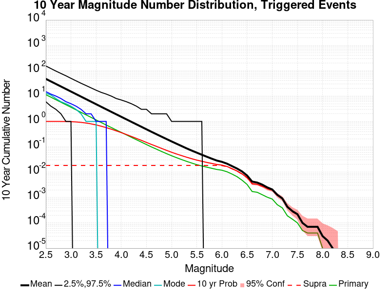
| Mag | Mean | 2.5 %ile | 97.5 %ile | Median | Mode | 10 yr Probability | 10 yr Supra-Seis Prob | Primary Aftershocks Mean |
|---|---|---|---|---|---|---|---|---|
| M≥2.5 | 48.110 | 6.000 | 155.000 | 15.000 | 13.000 | 1.000 (100.00%) | 0.018 (1.85%) | 11.392 |
| M≥2.6 | 38.223 | 4.000 | 123.000 | 12.000 | 11.000 | 1.000 (99.99%) | 0.018 (1.85%) | 9.054 |
| M≥2.7 | 30.368 | 3.000 | 98.000 | 10.000 | 8.000 | 0.999 (99.94%) | 0.018 (1.85%) | 7.197 |
| M≥2.8 | 24.128 | 2.000 | 78.000 | 8.000 | 6.000 | 0.997 (99.72%) | 0.018 (1.85%) | 5.718 |
| M≥2.9 | 19.169 | 1.000 | 63.000 | 6.000 | 5.000 | 0.992 (99.16%) | 0.018 (1.85%) | 4.549 |
| M≥3 | 15.226 | 1.000 | 51.000 | 5.000 | 4.000 | 0.980 (97.95%) | 0.018 (1.85%) | 3.619 |
| M≥3.1 | 12.087 | 0.000 | 40.000 | 4.000 | 3.000 | 0.955 (95.54%) | 0.018 (1.85%) | 2.875 |
| M≥3.2 | 9.604 | 0.000 | 32.000 | 3.000 | 2.000 | 0.918 (91.81%) | 0.018 (1.85%) | 2.289 |
| M≥3.3 | 7.628 | 0.000 | 26.000 | 2.000 | 1.000 | 0.867 (86.74%) | 0.018 (1.85%) | 1.821 |
| M≥3.4 | 6.059 | 0.000 | 21.000 | 2.000 | 1.000 | 0.802 (80.25%) | 0.018 (1.85%) | 1.447 |
| M≥3.5 | 4.813 | 0.000 | 17.000 | 1.000 | 1.000 | 0.729 (72.91%) | 0.018 (1.85%) | 1.149 |
| M≥3.6 | 3.823 | 0.000 | 14.000 | 1.000 | 0.000 | 0.649 (64.94%) | 0.018 (1.85%) | 0.911 |
| M≥3.7 | 3.039 | 0.000 | 12.000 | 1.000 | 0.000 | 0.571 (57.06%) | 0.018 (1.85%) | 0.724 |
| M≥3.8 | 2.417 | 0.000 | 10.000 | 0.000 | 0.000 | 0.496 (49.61%) | 0.018 (1.85%) | 0.578 |
| M≥3.9 | 1.925 | 0.000 | 8.000 | 0.000 | 0.000 | 0.425 (42.46%) | 0.018 (1.85%) | 0.461 |
| M≥4 | 1.533 | 0.000 | 7.000 | 0.000 | 0.000 | 0.362 (36.22%) | 0.018 (1.85%) | 0.371 |
| M≥4.1 | 1.222 | 0.000 | 6.000 | 0.000 | 0.000 | 0.307 (30.65%) | 0.018 (1.85%) | 0.298 |
| M≥4.2 | 0.972 | 0.000 | 5.000 | 0.000 | 0.000 | 0.256 (25.64%) | 0.018 (1.85%) | 0.238 |
| M≥4.3 | 0.775 | 0.000 | 4.000 | 0.000 | 0.000 | 0.215 (21.47%) | 0.018 (1.85%) | 0.191 |
| M≥4.4 | 0.618 | 0.000 | 3.000 | 0.000 | 0.000 | 0.179 (17.94%) | 0.018 (1.85%) | 0.154 |
| M≥4.5 | 0.492 | 0.000 | 3.000 | 0.000 | 0.000 | 0.149 (14.93%) | 0.018 (1.85%) | 0.124 |
| M≥4.6 | 0.392 | 0.000 | 3.000 | 0.000 | 0.000 | 0.124 (12.39%) | 0.018 (1.85%) | 0.100 |
| M≥4.7 | 0.314 | 0.000 | 2.000 | 0.000 | 0.000 | 0.104 (10.38%) | 0.018 (1.85%) | 0.081 |
| M≥4.8 | 0.252 | 0.000 | 2.000 | 0.000 | 0.000 | 0.086 (8.64%) | 0.018 (1.85%) | 0.066 |
| M≥4.9 | 0.202 | 0.000 | 2.000 | 0.000 | 0.000 | 0.072 (7.21%) | 0.018 (1.85%) | 0.054 |
| M≥5 | 0.163 | 0.000 | 1.000 | 0.000 | 0.000 | 0.061 (6.09%) | 0.018 (1.85%) | 0.045 |
| M≥5.1 | 0.133 | 0.000 | 1.000 | 0.000 | 0.000 | 0.052 (5.22%) | 0.018 (1.85%) | 0.038 |
| M≥5.2 | 0.108 | 0.000 | 1.000 | 0.000 | 0.000 | 0.045 (4.51%) | 0.018 (1.85%) | 0.032 |
| M≥5.3 | 0.087 | 0.000 | 1.000 | 0.000 | 0.000 | 0.039 (3.88%) | 0.018 (1.85%) | 0.027 |
| M≥5.4 | 0.071 | 0.000 | 1.000 | 0.000 | 0.000 | 0.034 (3.39%) | 0.018 (1.85%) | 0.023 |
| M≥5.5 | 0.059 | 0.000 | 1.000 | 0.000 | 0.000 | 0.030 (3.01%) | 0.018 (1.85%) | 0.020 |
| M≥5.6 | 0.049 | 0.000 | 1.000 | 0.000 | 0.000 | 0.027 (2.70%) | 0.018 (1.85%) | 0.018 |
| M≥5.7 | 0.041 | 0.000 | 0.000 | 0.000 | 0.000 | 0.024 (2.43%) | 0.018 (1.85%) | 0.016 |
| M≥5.8 | 0.034 | 0.000 | 0.000 | 0.000 | 0.000 | 0.022 (2.22%) | 0.018 (1.85%) | 0.014 |
| M≥5.9 | 0.029 | 0.000 | 0.000 | 0.000 | 0.000 | 0.020 (2.01%) | 0.018 (1.84%) | 0.013 |
| M≥6 | 0.026 | 0.000 | 0.000 | 0.000 | 0.000 | 0.019 (1.90%) | 0.018 (1.82%) | 0.012 |
| M≥6.1 | 0.022 | 0.000 | 0.000 | 0.000 | 0.000 | 0.017 (1.67%) | 0.016 (1.62%) | 0.010 |
| M≥6.2 | 0.017 | 0.000 | 0.000 | 0.000 | 0.000 | 0.014 (1.37%) | 0.014 (1.35%) | 8.51E-3 |
| M≥6.3 | 0.014 | 0.000 | 0.000 | 0.000 | 0.000 | 0.011 (1.11%) | 0.011 (1.09%) | 6.73E-3 |
| M≥6.4 | 0.011 | 0.000 | 0.000 | 0.000 | 0.000 | 8.46E-3 (0.85%) | 8.32E-3 (0.83%) | 4.88E-3 |
| M≥6.5 | 7.40E-3 | 0.000 | 0.000 | 0.000 | 0.000 | 6.09E-3 (0.61%) | 5.99E-3 (0.60%) | 3.31E-3 |
| M≥6.6 | 4.34E-3 | 0.000 | 0.000 | 0.000 | 0.000 | 3.58E-3 (0.36%) | 3.54E-3 (0.35%) | 1.82E-3 |
| M≥6.7 | 3.97E-3 | 0.000 | 0.000 | 0.000 | 0.000 | 3.32E-3 (0.33%) | 3.28E-3 (0.33%) | 1.68E-3 |
| M≥6.8 | 3.28E-3 | 0.000 | 0.000 | 0.000 | 0.000 | 2.82E-3 (0.28%) | 2.76E-3 (0.28%) | 1.34E-3 |
| M≥6.9 | 2.55E-3 | 0.000 | 0.000 | 0.000 | 0.000 | 2.26E-3 (0.23%) | 2.22E-3 (0.22%) | 1.09E-3 |
| M≥7 | 2.07E-3 | 0.000 | 0.000 | 0.000 | 0.000 | 1.93E-3 (0.19%) | 1.90E-3 (0.19%) | 8.79E-4 |
| M≥7.1 | 1.27E-3 | 0.000 | 0.000 | 0.000 | 0.000 | 1.18E-3 (0.12%) | 1.16E-3 (0.12%) | 5.04E-4 |
| M≥7.2 | 8.91E-4 | 0.000 | 0.000 | 0.000 | 0.000 | 8.66E-4 (0.09%) | 8.53E-4 (0.09%) | 3.75E-4 |
| M≥7.3 | 4.39E-4 | 0.000 | 0.000 | 0.000 | 0.000 | 4.26E-4 (0.04%) | 4.13E-4 (0.04%) | 1.81E-4 |
| M≥7.4 | 2.97E-4 | 0.000 | 0.000 | 0.000 | 0.000 | 2.84E-4 (0.03%) | 2.71E-4 (0.03%) | 1.29E-4 |
| M≥7.5 | 2.33E-4 | 0.000 | 0.000 | 0.000 | 0.000 | 2.20E-4 (0.02%) | 2.20E-4 (0.02%) | 1.03E-4 |
| M≥7.6 | 1.03E-4 | 0.000 | 0.000 | 0.000 | 0.000 | 1.03E-4 (0.01%) | 1.03E-4 (0.01%) | 5.17E-5 |
| M≥7.7 | 9.04E-5 | 0.000 | 0.000 | 0.000 | 0.000 | 9.04E-5 (0.01%) | 9.04E-5 (0.01%) | 5.17E-5 |
| M≥7.8 | 9.04E-5 | 0.000 | 0.000 | 0.000 | 0.000 | 9.04E-5 (0.01%) | 9.04E-5 (0.01%) | 5.17E-5 |
| M≥7.9 | 9.04E-5 | 0.000 | 0.000 | 0.000 | 0.000 | 9.04E-5 (0.01%) | 9.04E-5 (0.01%) | 5.17E-5 |
| M≥8 | 3.88E-5 | 0.000 | 0.000 | 0.000 | 0.000 | 3.88E-5 (0.00%) | 3.88E-5 (0.00%) | 1.29E-5 |
| M≥8.1 | 2.58E-5 | 0.000 | 0.000 | 0.000 | 0.000 | 2.58E-5 (0.00%) | 2.58E-5 (0.00%) | 0.000 |
| M≥8.2 | 1.29E-5 | 0.000 | 0.000 | 0.000 | 0.000 | 1.29E-5 (0.00%) | 1.29E-5 (0.00%) | 0.000 |
| M≥8.3 | 0.000 | 0.000 | 0.000 | 0.000 | 0.000 | 0.000 (0.00%) | 0.000 (0.00%) | 0.000 |
| M≥8.4 | 0.000 | 0.000 | 0.000 | 0.000 | 0.000 | 0.000 (0.00%) | 0.000 (0.00%) | 0.000 |
| M≥8.5 | 0.000 | 0.000 | 0.000 | 0.000 | 0.000 | 0.000 (0.00%) | 0.000 (0.00%) | 0.000 |
| M≥8.6 | 0.000 | 0.000 | 0.000 | 0.000 | 0.000 | 0.000 (0.00%) | 0.000 (0.00%) | 0.000 |
| M≥8.7 | 0.000 | 0.000 | 0.000 | 0.000 | 0.000 | 0.000 (0.00%) | 0.000 (0.00%) | 0.000 |
| M≥8.8 | 0.000 | 0.000 | 0.000 | 0.000 | 0.000 | 0.000 (0.00%) | 0.000 (0.00%) | 0.000 |
| M≥8.9 | 0.000 | 0.000 | 0.000 | 0.000 | 0.000 | 0.000 (0.00%) | 0.000 (0.00%) | 0.000 |
| M≥9 | 0.000 | 0.000 | 0.000 | 0.000 | 0.000 | 0.000 (0.00%) | 0.000 (0.00%) | 0.000 |
Legend
| Mag | Mean | 2.5 %ile | 97.5 %ile | Median | Mode | 1 yr Probability | 1 yr Supra-Seis Prob | Primary Aftershocks Mean |
|---|---|---|---|---|---|---|---|---|
| M≥2.5 | 33.299 | 5.000 | 87.000 | 13.000 | 10.000 | 1.000 (99.99%) | 0.015 (1.53%) | 9.807 |
| M≥2.6 | 26.457 | 3.000 | 69.000 | 10.000 | 8.000 | 1.000 (99.96%) | 0.015 (1.53%) | 7.797 |
| M≥2.7 | 21.025 | 2.000 | 56.000 | 8.000 | 6.000 | 0.998 (99.82%) | 0.015 (1.53%) | 6.197 |
| M≥2.8 | 16.700 | 1.000 | 45.000 | 6.000 | 5.000 | 0.994 (99.39%) | 0.015 (1.53%) | 4.924 |
| M≥2.9 | 13.271 | 1.000 | 36.000 | 5.000 | 4.000 | 0.983 (98.34%) | 0.015 (1.53%) | 3.919 |
| M≥3 | 10.545 | 0.000 | 29.000 | 4.000 | 3.000 | 0.964 (96.35%) | 0.015 (1.53%) | 3.119 |
| M≥3.1 | 8.369 | 0.000 | 24.000 | 3.000 | 2.000 | 0.929 (92.93%) | 0.015 (1.53%) | 2.477 |
| M≥3.2 | 6.648 | 0.000 | 19.000 | 2.000 | 1.000 | 0.881 (88.05%) | 0.015 (1.53%) | 1.973 |
| M≥3.3 | 5.282 | 0.000 | 16.000 | 2.000 | 1.000 | 0.820 (82.02%) | 0.015 (1.53%) | 1.570 |
| M≥3.4 | 4.196 | 0.000 | 13.000 | 1.000 | 1.000 | 0.749 (74.88%) | 0.015 (1.53%) | 1.248 |
| M≥3.5 | 3.337 | 0.000 | 10.000 | 1.000 | 0.000 | 0.670 (67.05%) | 0.015 (1.53%) | 0.992 |
| M≥3.6 | 2.650 | 0.000 | 9.000 | 1.000 | 0.000 | 0.590 (58.97%) | 0.015 (1.53%) | 0.788 |
| M≥3.7 | 2.107 | 0.000 | 7.000 | 1.000 | 0.000 | 0.512 (51.22%) | 0.015 (1.53%) | 0.625 |
| M≥3.8 | 1.678 | 0.000 | 6.000 | 0.000 | 0.000 | 0.441 (44.07%) | 0.015 (1.53%) | 0.500 |
| M≥3.9 | 1.336 | 0.000 | 5.000 | 0.000 | 0.000 | 0.374 (37.37%) | 0.015 (1.53%) | 0.399 |
| M≥4 | 1.065 | 0.000 | 4.000 | 0.000 | 0.000 | 0.316 (31.61%) | 0.015 (1.53%) | 0.321 |
| M≥4.1 | 0.850 | 0.000 | 4.000 | 0.000 | 0.000 | 0.266 (26.58%) | 0.015 (1.53%) | 0.258 |
| M≥4.2 | 0.676 | 0.000 | 3.000 | 0.000 | 0.000 | 0.221 (22.05%) | 0.015 (1.53%) | 0.206 |
| M≥4.3 | 0.540 | 0.000 | 3.000 | 0.000 | 0.000 | 0.183 (18.33%) | 0.015 (1.53%) | 0.165 |
| M≥4.4 | 0.431 | 0.000 | 2.000 | 0.000 | 0.000 | 0.152 (15.22%) | 0.015 (1.53%) | 0.133 |
| M≥4.5 | 0.344 | 0.000 | 2.000 | 0.000 | 0.000 | 0.126 (12.64%) | 0.015 (1.53%) | 0.107 |
| M≥4.6 | 0.275 | 0.000 | 2.000 | 0.000 | 0.000 | 0.104 (10.43%) | 0.015 (1.53%) | 0.086 |
| M≥4.7 | 0.220 | 0.000 | 2.000 | 0.000 | 0.000 | 0.087 (8.66%) | 0.015 (1.53%) | 0.070 |
| M≥4.8 | 0.177 | 0.000 | 1.000 | 0.000 | 0.000 | 0.072 (7.21%) | 0.015 (1.53%) | 0.057 |
| M≥4.9 | 0.142 | 0.000 | 1.000 | 0.000 | 0.000 | 0.060 (6.01%) | 0.015 (1.53%) | 0.047 |
| M≥5 | 0.115 | 0.000 | 1.000 | 0.000 | 0.000 | 0.051 (5.06%) | 0.015 (1.53%) | 0.039 |
| M≥5.1 | 0.094 | 0.000 | 1.000 | 0.000 | 0.000 | 0.044 (4.35%) | 0.015 (1.53%) | 0.033 |
| M≥5.2 | 0.077 | 0.000 | 1.000 | 0.000 | 0.000 | 0.038 (3.75%) | 0.015 (1.53%) | 0.028 |
| M≥5.3 | 0.062 | 0.000 | 1.000 | 0.000 | 0.000 | 0.032 (3.21%) | 0.015 (1.53%) | 0.024 |
| M≥5.4 | 0.051 | 0.000 | 1.000 | 0.000 | 0.000 | 0.028 (2.80%) | 0.015 (1.53%) | 0.020 |
| M≥5.5 | 0.043 | 0.000 | 0.000 | 0.000 | 0.000 | 0.025 (2.49%) | 0.015 (1.53%) | 0.018 |
| M≥5.6 | 0.036 | 0.000 | 0.000 | 0.000 | 0.000 | 0.022 (2.23%) | 0.015 (1.53%) | 0.016 |
| M≥5.7 | 0.031 | 0.000 | 0.000 | 0.000 | 0.000 | 0.020 (2.02%) | 0.015 (1.53%) | 0.014 |
| M≥5.8 | 0.026 | 0.000 | 0.000 | 0.000 | 0.000 | 0.018 (1.84%) | 0.015 (1.53%) | 0.013 |
| M≥5.9 | 0.022 | 0.000 | 0.000 | 0.000 | 0.000 | 0.017 (1.67%) | 0.015 (1.53%) | 0.011 |
| M≥6 | 0.020 | 0.000 | 0.000 | 0.000 | 0.000 | 0.016 (1.58%) | 0.015 (1.51%) | 0.011 |
| M≥6.1 | 0.017 | 0.000 | 0.000 | 0.000 | 0.000 | 0.014 (1.38%) | 0.013 (1.34%) | 9.37E-3 |
| M≥6.2 | 0.014 | 0.000 | 0.000 | 0.000 | 0.000 | 0.011 (1.14%) | 0.011 (1.12%) | 7.62E-3 |
| M≥6.3 | 0.011 | 0.000 | 0.000 | 0.000 | 0.000 | 9.12E-3 (0.91%) | 9.01E-3 (0.90%) | 5.97E-3 |
| M≥6.4 | 8.14E-3 | 0.000 | 0.000 | 0.000 | 0.000 | 6.90E-3 (0.69%) | 6.80E-3 (0.68%) | 4.30E-3 |
| M≥6.5 | 5.79E-3 | 0.000 | 0.000 | 0.000 | 0.000 | 4.97E-3 (0.50%) | 4.92E-3 (0.49%) | 2.98E-3 |
| M≥6.6 | 3.28E-3 | 0.000 | 0.000 | 0.000 | 0.000 | 2.86E-3 (0.29%) | 2.83E-3 (0.28%) | 1.59E-3 |
| M≥6.7 | 3.01E-3 | 0.000 | 0.000 | 0.000 | 0.000 | 2.66E-3 (0.27%) | 2.64E-3 (0.26%) | 1.46E-3 |
| M≥6.8 | 2.48E-3 | 0.000 | 0.000 | 0.000 | 0.000 | 2.21E-3 (0.22%) | 2.18E-3 (0.22%) | 1.16E-3 |
| M≥6.9 | 1.95E-3 | 0.000 | 0.000 | 0.000 | 0.000 | 1.80E-3 (0.18%) | 1.78E-3 (0.18%) | 9.43E-4 |
| M≥7 | 1.61E-3 | 0.000 | 0.000 | 0.000 | 0.000 | 1.54E-3 (0.15%) | 1.52E-3 (0.15%) | 7.62E-4 |
| M≥7.1 | 9.82E-4 | 0.000 | 0.000 | 0.000 | 0.000 | 9.43E-4 (0.09%) | 9.43E-4 (0.09%) | 4.26E-4 |
| M≥7.2 | 6.98E-4 | 0.000 | 0.000 | 0.000 | 0.000 | 6.98E-4 (0.07%) | 6.98E-4 (0.07%) | 3.10E-4 |
| M≥7.3 | 3.10E-4 | 0.000 | 0.000 | 0.000 | 0.000 | 3.10E-4 (0.03%) | 3.10E-4 (0.03%) | 1.29E-4 |
| M≥7.4 | 1.94E-4 | 0.000 | 0.000 | 0.000 | 0.000 | 1.94E-4 (0.02%) | 1.94E-4 (0.02%) | 9.04E-5 |
| M≥7.5 | 1.68E-4 | 0.000 | 0.000 | 0.000 | 0.000 | 1.68E-4 (0.02%) | 1.68E-4 (0.02%) | 7.75E-5 |
| M≥7.6 | 7.75E-5 | 0.000 | 0.000 | 0.000 | 0.000 | 7.75E-5 (0.01%) | 7.75E-5 (0.01%) | 3.88E-5 |
| M≥7.7 | 6.46E-5 | 0.000 | 0.000 | 0.000 | 0.000 | 6.46E-5 (0.01%) | 6.46E-5 (0.01%) | 3.88E-5 |
| M≥7.8 | 6.46E-5 | 0.000 | 0.000 | 0.000 | 0.000 | 6.46E-5 (0.01%) | 6.46E-5 (0.01%) | 3.88E-5 |
| M≥7.9 | 6.46E-5 | 0.000 | 0.000 | 0.000 | 0.000 | 6.46E-5 (0.01%) | 6.46E-5 (0.01%) | 3.88E-5 |
| M≥8 | 2.58E-5 | 0.000 | 0.000 | 0.000 | 0.000 | 2.58E-5 (0.00%) | 2.58E-5 (0.00%) | 0.000 |
| M≥8.1 | 2.58E-5 | 0.000 | 0.000 | 0.000 | 0.000 | 2.58E-5 (0.00%) | 2.58E-5 (0.00%) | 0.000 |
| M≥8.2 | 1.29E-5 | 0.000 | 0.000 | 0.000 | 0.000 | 1.29E-5 (0.00%) | 1.29E-5 (0.00%) | 0.000 |
| M≥8.3 | 0.000 | 0.000 | 0.000 | 0.000 | 0.000 | 0.000 (0.00%) | 0.000 (0.00%) | 0.000 |
| M≥8.4 | 0.000 | 0.000 | 0.000 | 0.000 | 0.000 | 0.000 (0.00%) | 0.000 (0.00%) | 0.000 |
| M≥8.5 | 0.000 | 0.000 | 0.000 | 0.000 | 0.000 | 0.000 (0.00%) | 0.000 (0.00%) | 0.000 |
| M≥8.6 | 0.000 | 0.000 | 0.000 | 0.000 | 0.000 | 0.000 (0.00%) | 0.000 (0.00%) | 0.000 |
| M≥8.7 | 0.000 | 0.000 | 0.000 | 0.000 | 0.000 | 0.000 (0.00%) | 0.000 (0.00%) | 0.000 |
| M≥8.8 | 0.000 | 0.000 | 0.000 | 0.000 | 0.000 | 0.000 (0.00%) | 0.000 (0.00%) | 0.000 |
| M≥8.9 | 0.000 | 0.000 | 0.000 | 0.000 | 0.000 | 0.000 (0.00%) | 0.000 (0.00%) | 0.000 |
| M≥9 | 0.000 | 0.000 | 0.000 | 0.000 | 0.000 | 0.000 (0.00%) | 0.000 (0.00%) | 0.000 |
Legend

| Mag | Mean | 2.5 %ile | 97.5 %ile | Median | Mode | 1 mo Probability | 1 mo Supra-Seis Prob | Primary Aftershocks Mean |
|---|---|---|---|---|---|---|---|---|
| M≥2.5 | 19.851 | 3.000 | 45.000 | 9.000 | 8.000 | 1.000 (99.97%) | 0.012 (1.16%) | 7.773 |
| M≥2.6 | 15.773 | 2.000 | 36.000 | 7.000 | 6.000 | 0.998 (99.80%) | 0.012 (1.16%) | 6.177 |
| M≥2.7 | 12.533 | 1.000 | 29.000 | 6.000 | 5.000 | 0.993 (99.32%) | 0.012 (1.16%) | 4.908 |
| M≥2.8 | 9.958 | 1.000 | 24.000 | 5.000 | 4.000 | 0.982 (98.19%) | 0.012 (1.16%) | 3.901 |
| M≥2.9 | 7.919 | 0.000 | 19.000 | 4.000 | 3.000 | 0.960 (95.99%) | 0.012 (1.16%) | 3.106 |
| M≥3 | 6.293 | 0.000 | 16.000 | 3.000 | 2.000 | 0.925 (92.47%) | 0.012 (1.16%) | 2.472 |
| M≥3.1 | 4.995 | 0.000 | 13.000 | 2.000 | 1.000 | 0.873 (87.32%) | 0.012 (1.16%) | 1.964 |
| M≥3.2 | 3.971 | 0.000 | 11.000 | 2.000 | 1.000 | 0.810 (80.95%) | 0.012 (1.16%) | 1.564 |
| M≥3.3 | 3.154 | 0.000 | 9.000 | 1.000 | 1.000 | 0.737 (73.73%) | 0.012 (1.16%) | 1.243 |
| M≥3.4 | 2.506 | 0.000 | 8.000 | 1.000 | 0.000 | 0.658 (65.84%) | 0.012 (1.16%) | 0.988 |
| M≥3.5 | 1.991 | 0.000 | 6.000 | 1.000 | 0.000 | 0.578 (57.85%) | 0.012 (1.16%) | 0.785 |
| M≥3.6 | 1.582 | 0.000 | 5.000 | 0.000 | 0.000 | 0.498 (49.84%) | 0.012 (1.16%) | 0.623 |
| M≥3.7 | 1.257 | 0.000 | 5.000 | 0.000 | 0.000 | 0.426 (42.58%) | 0.012 (1.16%) | 0.494 |
| M≥3.8 | 1.003 | 0.000 | 4.000 | 0.000 | 0.000 | 0.362 (36.16%) | 0.012 (1.16%) | 0.396 |
| M≥3.9 | 0.798 | 0.000 | 3.000 | 0.000 | 0.000 | 0.303 (30.27%) | 0.012 (1.16%) | 0.315 |
| M≥4 | 0.636 | 0.000 | 3.000 | 0.000 | 0.000 | 0.253 (25.28%) | 0.012 (1.16%) | 0.254 |
| M≥4.1 | 0.509 | 0.000 | 3.000 | 0.000 | 0.000 | 0.211 (21.09%) | 0.012 (1.16%) | 0.204 |
| M≥4.2 | 0.406 | 0.000 | 2.000 | 0.000 | 0.000 | 0.174 (17.40%) | 0.012 (1.16%) | 0.163 |
| M≥4.3 | 0.324 | 0.000 | 2.000 | 0.000 | 0.000 | 0.144 (14.36%) | 0.012 (1.16%) | 0.131 |
| M≥4.4 | 0.260 | 0.000 | 2.000 | 0.000 | 0.000 | 0.119 (11.89%) | 0.012 (1.16%) | 0.106 |
| M≥4.5 | 0.209 | 0.000 | 2.000 | 0.000 | 0.000 | 0.098 (9.82%) | 0.012 (1.16%) | 0.085 |
| M≥4.6 | 0.167 | 0.000 | 1.000 | 0.000 | 0.000 | 0.081 (8.09%) | 0.012 (1.16%) | 0.069 |
| M≥4.7 | 0.134 | 0.000 | 1.000 | 0.000 | 0.000 | 0.067 (6.69%) | 0.012 (1.16%) | 0.056 |
| M≥4.8 | 0.108 | 0.000 | 1.000 | 0.000 | 0.000 | 0.055 (5.54%) | 0.012 (1.16%) | 0.046 |
| M≥4.9 | 0.088 | 0.000 | 1.000 | 0.000 | 0.000 | 0.046 (4.63%) | 0.012 (1.16%) | 0.038 |
| M≥5 | 0.071 | 0.000 | 1.000 | 0.000 | 0.000 | 0.039 (3.91%) | 0.012 (1.16%) | 0.031 |
| M≥5.1 | 0.059 | 0.000 | 1.000 | 0.000 | 0.000 | 0.034 (3.37%) | 0.012 (1.16%) | 0.027 |
| M≥5.2 | 0.049 | 0.000 | 1.000 | 0.000 | 0.000 | 0.029 (2.89%) | 0.012 (1.16%) | 0.023 |
| M≥5.3 | 0.040 | 0.000 | 0.000 | 0.000 | 0.000 | 0.025 (2.48%) | 0.012 (1.16%) | 0.019 |
| M≥5.4 | 0.033 | 0.000 | 0.000 | 0.000 | 0.000 | 0.022 (2.17%) | 0.012 (1.16%) | 0.017 |
| M≥5.5 | 0.028 | 0.000 | 0.000 | 0.000 | 0.000 | 0.019 (1.90%) | 0.012 (1.16%) | 0.015 |
| M≥5.6 | 0.024 | 0.000 | 0.000 | 0.000 | 0.000 | 0.017 (1.69%) | 0.012 (1.16%) | 0.013 |
| M≥5.7 | 0.021 | 0.000 | 0.000 | 0.000 | 0.000 | 0.015 (1.53%) | 0.012 (1.16%) | 0.012 |
| M≥5.8 | 0.018 | 0.000 | 0.000 | 0.000 | 0.000 | 0.014 (1.39%) | 0.012 (1.16%) | 0.010 |
| M≥5.9 | 0.016 | 0.000 | 0.000 | 0.000 | 0.000 | 0.013 (1.25%) | 0.012 (1.16%) | 9.48E-3 |
| M≥6 | 0.014 | 0.000 | 0.000 | 0.000 | 0.000 | 0.012 (1.20%) | 0.011 (1.15%) | 9.01E-3 |
| M≥6.1 | 0.012 | 0.000 | 0.000 | 0.000 | 0.000 | 0.010 (1.03%) | 0.010 (1.00%) | 7.70E-3 |
| M≥6.2 | 9.74E-3 | 0.000 | 0.000 | 0.000 | 0.000 | 8.55E-3 (0.86%) | 8.45E-3 (0.84%) | 6.28E-3 |
| M≥6.3 | 7.64E-3 | 0.000 | 0.000 | 0.000 | 0.000 | 6.80E-3 (0.68%) | 6.71E-3 (0.67%) | 4.90E-3 |
| M≥6.4 | 5.67E-3 | 0.000 | 0.000 | 0.000 | 0.000 | 5.06E-3 (0.51%) | 4.99E-3 (0.50%) | 3.45E-3 |
| M≥6.5 | 3.95E-3 | 0.000 | 0.000 | 0.000 | 0.000 | 3.55E-3 (0.36%) | 3.53E-3 (0.35%) | 2.42E-3 |
| M≥6.6 | 2.09E-3 | 0.000 | 0.000 | 0.000 | 0.000 | 1.90E-3 (0.19%) | 1.87E-3 (0.19%) | 1.27E-3 |
| M≥6.7 | 1.91E-3 | 0.000 | 0.000 | 0.000 | 0.000 | 1.77E-3 (0.18%) | 1.74E-3 (0.17%) | 1.16E-3 |
| M≥6.8 | 1.58E-3 | 0.000 | 0.000 | 0.000 | 0.000 | 1.47E-3 (0.15%) | 1.45E-3 (0.14%) | 9.56E-4 |
| M≥6.9 | 1.33E-3 | 0.000 | 0.000 | 0.000 | 0.000 | 1.24E-3 (0.12%) | 1.23E-3 (0.12%) | 7.88E-4 |
| M≥7 | 1.07E-3 | 0.000 | 0.000 | 0.000 | 0.000 | 1.01E-3 (0.10%) | 9.95E-4 (0.10%) | 6.20E-4 |
| M≥7.1 | 6.98E-4 | 0.000 | 0.000 | 0.000 | 0.000 | 6.72E-4 (0.07%) | 6.72E-4 (0.07%) | 3.62E-4 |
| M≥7.2 | 5.17E-4 | 0.000 | 0.000 | 0.000 | 0.000 | 5.17E-4 (0.05%) | 5.17E-4 (0.05%) | 2.71E-4 |
| M≥7.3 | 1.94E-4 | 0.000 | 0.000 | 0.000 | 0.000 | 1.94E-4 (0.02%) | 1.94E-4 (0.02%) | 9.04E-5 |
| M≥7.4 | 9.04E-5 | 0.000 | 0.000 | 0.000 | 0.000 | 9.04E-5 (0.01%) | 9.04E-5 (0.01%) | 5.17E-5 |
| M≥7.5 | 7.75E-5 | 0.000 | 0.000 | 0.000 | 0.000 | 7.75E-5 (0.01%) | 7.75E-5 (0.01%) | 3.88E-5 |
| M≥7.6 | 2.58E-5 | 0.000 | 0.000 | 0.000 | 0.000 | 2.58E-5 (0.00%) | 2.58E-5 (0.00%) | 1.29E-5 |
| M≥7.7 | 1.29E-5 | 0.000 | 0.000 | 0.000 | 0.000 | 1.29E-5 (0.00%) | 1.29E-5 (0.00%) | 1.29E-5 |
| M≥7.8 | 1.29E-5 | 0.000 | 0.000 | 0.000 | 0.000 | 1.29E-5 (0.00%) | 1.29E-5 (0.00%) | 1.29E-5 |
| M≥7.9 | 1.29E-5 | 0.000 | 0.000 | 0.000 | 0.000 | 1.29E-5 (0.00%) | 1.29E-5 (0.00%) | 1.29E-5 |
| M≥8 | 0.000 | 0.000 | 0.000 | 0.000 | 0.000 | 0.000 (0.00%) | 0.000 (0.00%) | 0.000 |
| M≥8.1 | 0.000 | 0.000 | 0.000 | 0.000 | 0.000 | 0.000 (0.00%) | 0.000 (0.00%) | 0.000 |
| M≥8.2 | 0.000 | 0.000 | 0.000 | 0.000 | 0.000 | 0.000 (0.00%) | 0.000 (0.00%) | 0.000 |
| M≥8.3 | 0.000 | 0.000 | 0.000 | 0.000 | 0.000 | 0.000 (0.00%) | 0.000 (0.00%) | 0.000 |
| M≥8.4 | 0.000 | 0.000 | 0.000 | 0.000 | 0.000 | 0.000 (0.00%) | 0.000 (0.00%) | 0.000 |
| M≥8.5 | 0.000 | 0.000 | 0.000 | 0.000 | 0.000 | 0.000 (0.00%) | 0.000 (0.00%) | 0.000 |
| M≥8.6 | 0.000 | 0.000 | 0.000 | 0.000 | 0.000 | 0.000 (0.00%) | 0.000 (0.00%) | 0.000 |
| M≥8.7 | 0.000 | 0.000 | 0.000 | 0.000 | 0.000 | 0.000 (0.00%) | 0.000 (0.00%) | 0.000 |
| M≥8.8 | 0.000 | 0.000 | 0.000 | 0.000 | 0.000 | 0.000 (0.00%) | 0.000 (0.00%) | 0.000 |
| M≥8.9 | 0.000 | 0.000 | 0.000 | 0.000 | 0.000 | 0.000 (0.00%) | 0.000 (0.00%) | 0.000 |
| M≥9 | 0.000 | 0.000 | 0.000 | 0.000 | 0.000 | 0.000 (0.00%) | 0.000 (0.00%) | 0.000 |
Legend

| Mag | Mean | 2.5 %ile | 97.5 %ile | Median | Mode | 1 wk Probability | 1 wk Supra-Seis Prob | Primary Aftershocks Mean |
|---|---|---|---|---|---|---|---|---|
| M≥2.5 | 14.381 | 2.000 | 29.000 | 7.000 | 6.000 | 0.999 (99.86%) | 9.25E-3 (0.93%) | 6.439 |
| M≥2.6 | 11.428 | 1.000 | 24.000 | 6.000 | 5.000 | 0.994 (99.44%) | 9.25E-3 (0.93%) | 5.117 |
| M≥2.7 | 9.079 | 1.000 | 19.000 | 5.000 | 4.000 | 0.984 (98.39%) | 9.25E-3 (0.93%) | 4.065 |
| M≥2.8 | 7.216 | 0.000 | 16.000 | 4.000 | 3.000 | 0.963 (96.28%) | 9.25E-3 (0.93%) | 3.233 |
| M≥2.9 | 5.740 | 0.000 | 13.000 | 3.000 | 2.000 | 0.929 (92.94%) | 9.25E-3 (0.93%) | 2.575 |
| M≥3 | 4.562 | 0.000 | 11.000 | 2.000 | 2.000 | 0.881 (88.07%) | 9.25E-3 (0.93%) | 2.050 |
| M≥3.1 | 3.622 | 0.000 | 9.000 | 2.000 | 1.000 | 0.817 (81.71%) | 9.25E-3 (0.93%) | 1.628 |
| M≥3.2 | 2.879 | 0.000 | 8.000 | 1.000 | 1.000 | 0.745 (74.52%) | 9.25E-3 (0.93%) | 1.298 |
| M≥3.3 | 2.288 | 0.000 | 6.000 | 1.000 | 0.000 | 0.667 (66.69%) | 9.25E-3 (0.93%) | 1.033 |
| M≥3.4 | 1.817 | 0.000 | 6.000 | 1.000 | 0.000 | 0.586 (58.60%) | 9.25E-3 (0.93%) | 0.822 |
| M≥3.5 | 1.444 | 0.000 | 5.000 | 1.000 | 0.000 | 0.507 (50.74%) | 9.25E-3 (0.93%) | 0.654 |
| M≥3.6 | 1.147 | 0.000 | 4.000 | 0.000 | 0.000 | 0.432 (43.19%) | 9.25E-3 (0.93%) | 0.519 |
| M≥3.7 | 0.914 | 0.000 | 3.000 | 0.000 | 0.000 | 0.365 (36.49%) | 9.25E-3 (0.93%) | 0.412 |
| M≥3.8 | 0.729 | 0.000 | 3.000 | 0.000 | 0.000 | 0.307 (30.71%) | 9.25E-3 (0.93%) | 0.330 |
| M≥3.9 | 0.579 | 0.000 | 3.000 | 0.000 | 0.000 | 0.254 (25.44%) | 9.25E-3 (0.93%) | 0.263 |
| M≥4 | 0.462 | 0.000 | 2.000 | 0.000 | 0.000 | 0.212 (21.16%) | 9.25E-3 (0.93%) | 0.212 |
| M≥4.1 | 0.370 | 0.000 | 2.000 | 0.000 | 0.000 | 0.176 (17.55%) | 9.25E-3 (0.93%) | 0.170 |
| M≥4.2 | 0.295 | 0.000 | 2.000 | 0.000 | 0.000 | 0.144 (14.37%) | 9.25E-3 (0.93%) | 0.136 |
| M≥4.3 | 0.236 | 0.000 | 2.000 | 0.000 | 0.000 | 0.118 (11.82%) | 9.25E-3 (0.93%) | 0.110 |
| M≥4.4 | 0.189 | 0.000 | 1.000 | 0.000 | 0.000 | 0.097 (9.72%) | 9.25E-3 (0.93%) | 0.088 |
| M≥4.5 | 0.152 | 0.000 | 1.000 | 0.000 | 0.000 | 0.080 (8.01%) | 9.25E-3 (0.93%) | 0.071 |
| M≥4.6 | 0.122 | 0.000 | 1.000 | 0.000 | 0.000 | 0.066 (6.60%) | 9.25E-3 (0.93%) | 0.058 |
| M≥4.7 | 0.098 | 0.000 | 1.000 | 0.000 | 0.000 | 0.054 (5.41%) | 9.25E-3 (0.93%) | 0.047 |
| M≥4.8 | 0.079 | 0.000 | 1.000 | 0.000 | 0.000 | 0.045 (4.48%) | 9.25E-3 (0.93%) | 0.038 |
| M≥4.9 | 0.064 | 0.000 | 1.000 | 0.000 | 0.000 | 0.037 (3.72%) | 9.25E-3 (0.93%) | 0.031 |
| M≥5 | 0.053 | 0.000 | 1.000 | 0.000 | 0.000 | 0.032 (3.15%) | 9.25E-3 (0.93%) | 0.026 |
| M≥5.1 | 0.044 | 0.000 | 1.000 | 0.000 | 0.000 | 0.027 (2.72%) | 9.25E-3 (0.93%) | 0.023 |
| M≥5.2 | 0.037 | 0.000 | 0.000 | 0.000 | 0.000 | 0.023 (2.34%) | 9.25E-3 (0.93%) | 0.019 |
| M≥5.3 | 0.030 | 0.000 | 0.000 | 0.000 | 0.000 | 0.020 (2.01%) | 9.25E-3 (0.93%) | 0.016 |
| M≥5.4 | 0.025 | 0.000 | 0.000 | 0.000 | 0.000 | 0.017 (1.74%) | 9.25E-3 (0.93%) | 0.014 |
| M≥5.5 | 0.021 | 0.000 | 0.000 | 0.000 | 0.000 | 0.015 (1.51%) | 9.25E-3 (0.93%) | 0.012 |
| M≥5.6 | 0.018 | 0.000 | 0.000 | 0.000 | 0.000 | 0.013 (1.35%) | 9.25E-3 (0.93%) | 0.011 |
| M≥5.7 | 0.016 | 0.000 | 0.000 | 0.000 | 0.000 | 0.012 (1.22%) | 9.25E-3 (0.93%) | 9.86E-3 |
| M≥5.8 | 0.014 | 0.000 | 0.000 | 0.000 | 0.000 | 0.011 (1.10%) | 9.25E-3 (0.93%) | 8.84E-3 |
| M≥5.9 | 0.012 | 0.000 | 0.000 | 0.000 | 0.000 | 0.010 (1.00%) | 9.25E-3 (0.93%) | 8.00E-3 |
| M≥6 | 0.011 | 0.000 | 0.000 | 0.000 | 0.000 | 9.51E-3 (0.95%) | 9.13E-3 (0.91%) | 7.55E-3 |
| M≥6.1 | 9.32E-3 | 0.000 | 0.000 | 0.000 | 0.000 | 8.15E-3 (0.82%) | 7.97E-3 (0.80%) | 6.49E-3 |
| M≥6.2 | 7.67E-3 | 0.000 | 0.000 | 0.000 | 0.000 | 6.78E-3 (0.68%) | 6.71E-3 (0.67%) | 5.28E-3 |
| M≥6.3 | 6.10E-3 | 0.000 | 0.000 | 0.000 | 0.000 | 5.45E-3 (0.55%) | 5.39E-3 (0.54%) | 4.12E-3 |
| M≥6.4 | 4.47E-3 | 0.000 | 0.000 | 0.000 | 0.000 | 4.03E-3 (0.40%) | 3.98E-3 (0.40%) | 2.89E-3 |
| M≥6.5 | 3.14E-3 | 0.000 | 0.000 | 0.000 | 0.000 | 2.86E-3 (0.29%) | 2.83E-3 (0.28%) | 2.08E-3 |
| M≥6.6 | 1.64E-3 | 0.000 | 0.000 | 0.000 | 0.000 | 1.51E-3 (0.15%) | 1.49E-3 (0.15%) | 1.09E-3 |
| M≥6.7 | 1.54E-3 | 0.000 | 0.000 | 0.000 | 0.000 | 1.42E-3 (0.14%) | 1.40E-3 (0.14%) | 1.01E-3 |
| M≥6.8 | 1.29E-3 | 0.000 | 0.000 | 0.000 | 0.000 | 1.20E-3 (0.12%) | 1.19E-3 (0.12%) | 8.40E-4 |
| M≥6.9 | 1.12E-3 | 0.000 | 0.000 | 0.000 | 0.000 | 1.03E-3 (0.10%) | 1.03E-3 (0.10%) | 6.98E-4 |
| M≥7 | 9.17E-4 | 0.000 | 0.000 | 0.000 | 0.000 | 8.53E-4 (0.09%) | 8.53E-4 (0.09%) | 5.68E-4 |
| M≥7.1 | 5.94E-4 | 0.000 | 0.000 | 0.000 | 0.000 | 5.68E-4 (0.06%) | 5.68E-4 (0.06%) | 3.36E-4 |
| M≥7.2 | 4.52E-4 | 0.000 | 0.000 | 0.000 | 0.000 | 4.52E-4 (0.05%) | 4.52E-4 (0.05%) | 2.45E-4 |
| M≥7.3 | 1.55E-4 | 0.000 | 0.000 | 0.000 | 0.000 | 1.55E-4 (0.02%) | 1.55E-4 (0.02%) | 6.46E-5 |
| M≥7.4 | 7.75E-5 | 0.000 | 0.000 | 0.000 | 0.000 | 7.75E-5 (0.01%) | 7.75E-5 (0.01%) | 3.88E-5 |
| M≥7.5 | 6.46E-5 | 0.000 | 0.000 | 0.000 | 0.000 | 6.46E-5 (0.01%) | 6.46E-5 (0.01%) | 2.58E-5 |
| M≥7.6 | 2.58E-5 | 0.000 | 0.000 | 0.000 | 0.000 | 2.58E-5 (0.00%) | 2.58E-5 (0.00%) | 1.29E-5 |
| M≥7.7 | 1.29E-5 | 0.000 | 0.000 | 0.000 | 0.000 | 1.29E-5 (0.00%) | 1.29E-5 (0.00%) | 1.29E-5 |
| M≥7.8 | 1.29E-5 | 0.000 | 0.000 | 0.000 | 0.000 | 1.29E-5 (0.00%) | 1.29E-5 (0.00%) | 1.29E-5 |
| M≥7.9 | 1.29E-5 | 0.000 | 0.000 | 0.000 | 0.000 | 1.29E-5 (0.00%) | 1.29E-5 (0.00%) | 1.29E-5 |
| M≥8 | 0.000 | 0.000 | 0.000 | 0.000 | 0.000 | 0.000 (0.00%) | 0.000 (0.00%) | 0.000 |
| M≥8.1 | 0.000 | 0.000 | 0.000 | 0.000 | 0.000 | 0.000 (0.00%) | 0.000 (0.00%) | 0.000 |
| M≥8.2 | 0.000 | 0.000 | 0.000 | 0.000 | 0.000 | 0.000 (0.00%) | 0.000 (0.00%) | 0.000 |
| M≥8.3 | 0.000 | 0.000 | 0.000 | 0.000 | 0.000 | 0.000 (0.00%) | 0.000 (0.00%) | 0.000 |
| M≥8.4 | 0.000 | 0.000 | 0.000 | 0.000 | 0.000 | 0.000 (0.00%) | 0.000 (0.00%) | 0.000 |
| M≥8.5 | 0.000 | 0.000 | 0.000 | 0.000 | 0.000 | 0.000 (0.00%) | 0.000 (0.00%) | 0.000 |
| M≥8.6 | 0.000 | 0.000 | 0.000 | 0.000 | 0.000 | 0.000 (0.00%) | 0.000 (0.00%) | 0.000 |
| M≥8.7 | 0.000 | 0.000 | 0.000 | 0.000 | 0.000 | 0.000 (0.00%) | 0.000 (0.00%) | 0.000 |
| M≥8.8 | 0.000 | 0.000 | 0.000 | 0.000 | 0.000 | 0.000 (0.00%) | 0.000 (0.00%) | 0.000 |
| M≥8.9 | 0.000 | 0.000 | 0.000 | 0.000 | 0.000 | 0.000 (0.00%) | 0.000 (0.00%) | 0.000 |
| M≥9 | 0.000 | 0.000 | 0.000 | 0.000 | 0.000 | 0.000 (0.00%) | 0.000 (0.00%) | 0.000 |
Legend

| Mag | Mean | 2.5 %ile | 97.5 %ile | Median | Mode | 1 d Probability | 1 d Supra-Seis Prob | Primary Aftershocks Mean |
|---|---|---|---|---|---|---|---|---|
| M≥2.5 | 8.216 | 1.000 | 16.000 | 5.000 | 4.000 | 0.990 (98.97%) | 6.47E-3 (0.65%) | 4.588 |
| M≥2.6 | 6.527 | 0.000 | 13.000 | 4.000 | 3.000 | 0.975 (97.47%) | 6.47E-3 (0.65%) | 3.647 |
| M≥2.7 | 5.186 | 0.000 | 11.000 | 3.000 | 2.000 | 0.947 (94.65%) | 6.47E-3 (0.65%) | 2.897 |
| M≥2.8 | 4.121 | 0.000 | 9.000 | 2.000 | 2.000 | 0.903 (90.32%) | 6.47E-3 (0.65%) | 2.304 |
| M≥2.9 | 3.279 | 0.000 | 8.000 | 2.000 | 1.000 | 0.845 (84.51%) | 6.47E-3 (0.65%) | 1.834 |
| M≥3 | 2.609 | 0.000 | 7.000 | 1.000 | 1.000 | 0.777 (77.66%) | 6.47E-3 (0.65%) | 1.462 |
| M≥3.1 | 2.073 | 0.000 | 6.000 | 1.000 | 1.000 | 0.698 (69.85%) | 6.47E-3 (0.65%) | 1.162 |
| M≥3.2 | 1.651 | 0.000 | 5.000 | 1.000 | 0.000 | 0.619 (61.95%) | 6.47E-3 (0.65%) | 0.929 |
| M≥3.3 | 1.313 | 0.000 | 4.000 | 1.000 | 0.000 | 0.539 (53.86%) | 6.47E-3 (0.65%) | 0.739 |
| M≥3.4 | 1.042 | 0.000 | 4.000 | 0.000 | 0.000 | 0.461 (46.15%) | 6.47E-3 (0.65%) | 0.588 |
| M≥3.5 | 0.828 | 0.000 | 3.000 | 0.000 | 0.000 | 0.392 (39.16%) | 6.47E-3 (0.65%) | 0.468 |
| M≥3.6 | 0.657 | 0.000 | 3.000 | 0.000 | 0.000 | 0.326 (32.61%) | 6.47E-3 (0.65%) | 0.370 |
| M≥3.7 | 0.524 | 0.000 | 2.000 | 0.000 | 0.000 | 0.272 (27.19%) | 6.47E-3 (0.65%) | 0.295 |
| M≥3.8 | 0.419 | 0.000 | 2.000 | 0.000 | 0.000 | 0.226 (22.62%) | 6.47E-3 (0.65%) | 0.237 |
| M≥3.9 | 0.332 | 0.000 | 2.000 | 0.000 | 0.000 | 0.186 (18.57%) | 6.47E-3 (0.65%) | 0.189 |
| M≥4 | 0.265 | 0.000 | 2.000 | 0.000 | 0.000 | 0.153 (15.31%) | 6.47E-3 (0.65%) | 0.152 |
| M≥4.1 | 0.212 | 0.000 | 1.000 | 0.000 | 0.000 | 0.126 (12.56%) | 6.47E-3 (0.65%) | 0.122 |
| M≥4.2 | 0.169 | 0.000 | 1.000 | 0.000 | 0.000 | 0.102 (10.21%) | 6.47E-3 (0.65%) | 0.097 |
| M≥4.3 | 0.136 | 0.000 | 1.000 | 0.000 | 0.000 | 0.084 (8.39%) | 6.47E-3 (0.65%) | 0.079 |
| M≥4.4 | 0.110 | 0.000 | 1.000 | 0.000 | 0.000 | 0.069 (6.86%) | 6.47E-3 (0.65%) | 0.063 |
| M≥4.5 | 0.088 | 0.000 | 1.000 | 0.000 | 0.000 | 0.056 (5.62%) | 6.47E-3 (0.65%) | 0.051 |
| M≥4.6 | 0.072 | 0.000 | 1.000 | 0.000 | 0.000 | 0.046 (4.63%) | 6.47E-3 (0.65%) | 0.042 |
| M≥4.7 | 0.058 | 0.000 | 1.000 | 0.000 | 0.000 | 0.038 (3.81%) | 6.47E-3 (0.65%) | 0.034 |
| M≥4.8 | 0.047 | 0.000 | 1.000 | 0.000 | 0.000 | 0.031 (3.14%) | 6.47E-3 (0.65%) | 0.028 |
| M≥4.9 | 0.038 | 0.000 | 1.000 | 0.000 | 0.000 | 0.026 (2.58%) | 6.47E-3 (0.65%) | 0.023 |
| M≥5 | 0.031 | 0.000 | 0.000 | 0.000 | 0.000 | 0.022 (2.16%) | 6.47E-3 (0.65%) | 0.019 |
| M≥5.1 | 0.026 | 0.000 | 0.000 | 0.000 | 0.000 | 0.019 (1.88%) | 6.47E-3 (0.65%) | 0.016 |
| M≥5.2 | 0.022 | 0.000 | 0.000 | 0.000 | 0.000 | 0.016 (1.62%) | 6.47E-3 (0.65%) | 0.014 |
| M≥5.3 | 0.018 | 0.000 | 0.000 | 0.000 | 0.000 | 0.014 (1.38%) | 6.47E-3 (0.65%) | 0.012 |
| M≥5.4 | 0.015 | 0.000 | 0.000 | 0.000 | 0.000 | 0.012 (1.19%) | 6.47E-3 (0.65%) | 0.010 |
| M≥5.5 | 0.013 | 0.000 | 0.000 | 0.000 | 0.000 | 0.010 (1.05%) | 6.47E-3 (0.65%) | 8.94E-3 |
| M≥5.6 | 0.011 | 0.000 | 0.000 | 0.000 | 0.000 | 9.25E-3 (0.93%) | 6.47E-3 (0.65%) | 7.95E-3 |
| M≥5.7 | 0.010 | 0.000 | 0.000 | 0.000 | 0.000 | 8.53E-3 (0.85%) | 6.47E-3 (0.65%) | 7.27E-3 |
| M≥5.8 | 9.03E-3 | 0.000 | 0.000 | 0.000 | 0.000 | 7.73E-3 (0.77%) | 6.47E-3 (0.65%) | 6.56E-3 |
| M≥5.9 | 7.92E-3 | 0.000 | 0.000 | 0.000 | 0.000 | 6.98E-3 (0.70%) | 6.47E-3 (0.65%) | 5.93E-3 |
| M≥6 | 7.33E-3 | 0.000 | 0.000 | 0.000 | 0.000 | 6.63E-3 (0.66%) | 6.41E-3 (0.64%) | 5.59E-3 |
| M≥6.1 | 6.27E-3 | 0.000 | 0.000 | 0.000 | 0.000 | 5.67E-3 (0.57%) | 5.57E-3 (0.56%) | 4.84E-3 |
| M≥6.2 | 5.12E-3 | 0.000 | 0.000 | 0.000 | 0.000 | 4.70E-3 (0.47%) | 4.66E-3 (0.47%) | 3.95E-3 |
| M≥6.3 | 4.07E-3 | 0.000 | 0.000 | 0.000 | 0.000 | 3.73E-3 (0.37%) | 3.71E-3 (0.37%) | 3.09E-3 |
| M≥6.4 | 2.92E-3 | 0.000 | 0.000 | 0.000 | 0.000 | 2.67E-3 (0.27%) | 2.65E-3 (0.26%) | 2.13E-3 |
| M≥6.5 | 2.02E-3 | 0.000 | 0.000 | 0.000 | 0.000 | 1.85E-3 (0.18%) | 1.83E-3 (0.18%) | 1.50E-3 |
| M≥6.6 | 1.07E-3 | 0.000 | 0.000 | 0.000 | 0.000 | 1.02E-3 (0.10%) | 1.01E-3 (0.10%) | 7.88E-4 |
| M≥6.7 | 1.02E-3 | 0.000 | 0.000 | 0.000 | 0.000 | 9.69E-4 (0.10%) | 9.56E-4 (0.10%) | 7.49E-4 |
| M≥6.8 | 8.66E-4 | 0.000 | 0.000 | 0.000 | 0.000 | 8.40E-4 (0.08%) | 8.27E-4 (0.08%) | 6.46E-4 |
| M≥6.9 | 7.36E-4 | 0.000 | 0.000 | 0.000 | 0.000 | 7.11E-4 (0.07%) | 7.11E-4 (0.07%) | 5.43E-4 |
| M≥7 | 6.33E-4 | 0.000 | 0.000 | 0.000 | 0.000 | 6.07E-4 (0.06%) | 6.07E-4 (0.06%) | 4.39E-4 |
| M≥7.1 | 3.88E-4 | 0.000 | 0.000 | 0.000 | 0.000 | 3.88E-4 (0.04%) | 3.88E-4 (0.04%) | 2.58E-4 |
| M≥7.2 | 3.10E-4 | 0.000 | 0.000 | 0.000 | 0.000 | 3.10E-4 (0.03%) | 3.10E-4 (0.03%) | 1.81E-4 |
| M≥7.3 | 9.04E-5 | 0.000 | 0.000 | 0.000 | 0.000 | 9.04E-5 (0.01%) | 9.04E-5 (0.01%) | 5.17E-5 |
| M≥7.4 | 3.88E-5 | 0.000 | 0.000 | 0.000 | 0.000 | 3.88E-5 (0.00%) | 3.88E-5 (0.00%) | 2.58E-5 |
| M≥7.5 | 2.58E-5 | 0.000 | 0.000 | 0.000 | 0.000 | 2.58E-5 (0.00%) | 2.58E-5 (0.00%) | 1.29E-5 |
| M≥7.6 | 1.29E-5 | 0.000 | 0.000 | 0.000 | 0.000 | 1.29E-5 (0.00%) | 1.29E-5 (0.00%) | 1.29E-5 |
| M≥7.7 | 1.29E-5 | 0.000 | 0.000 | 0.000 | 0.000 | 1.29E-5 (0.00%) | 1.29E-5 (0.00%) | 1.29E-5 |
| M≥7.8 | 1.29E-5 | 0.000 | 0.000 | 0.000 | 0.000 | 1.29E-5 (0.00%) | 1.29E-5 (0.00%) | 1.29E-5 |
| M≥7.9 | 1.29E-5 | 0.000 | 0.000 | 0.000 | 0.000 | 1.29E-5 (0.00%) | 1.29E-5 (0.00%) | 1.29E-5 |
| M≥8 | 0.000 | 0.000 | 0.000 | 0.000 | 0.000 | 0.000 (0.00%) | 0.000 (0.00%) | 0.000 |
| M≥8.1 | 0.000 | 0.000 | 0.000 | 0.000 | 0.000 | 0.000 (0.00%) | 0.000 (0.00%) | 0.000 |
| M≥8.2 | 0.000 | 0.000 | 0.000 | 0.000 | 0.000 | 0.000 (0.00%) | 0.000 (0.00%) | 0.000 |
| M≥8.3 | 0.000 | 0.000 | 0.000 | 0.000 | 0.000 | 0.000 (0.00%) | 0.000 (0.00%) | 0.000 |
| M≥8.4 | 0.000 | 0.000 | 0.000 | 0.000 | 0.000 | 0.000 (0.00%) | 0.000 (0.00%) | 0.000 |
| M≥8.5 | 0.000 | 0.000 | 0.000 | 0.000 | 0.000 | 0.000 (0.00%) | 0.000 (0.00%) | 0.000 |
| M≥8.6 | 0.000 | 0.000 | 0.000 | 0.000 | 0.000 | 0.000 (0.00%) | 0.000 (0.00%) | 0.000 |
| M≥8.7 | 0.000 | 0.000 | 0.000 | 0.000 | 0.000 | 0.000 (0.00%) | 0.000 (0.00%) | 0.000 |
| M≥8.8 | 0.000 | 0.000 | 0.000 | 0.000 | 0.000 | 0.000 (0.00%) | 0.000 (0.00%) | 0.000 |
| M≥8.9 | 0.000 | 0.000 | 0.000 | 0.000 | 0.000 | 0.000 (0.00%) | 0.000 (0.00%) | 0.000 |
| M≥9 | 0.000 | 0.000 | 0.000 | 0.000 | 0.000 | 0.000 (0.00%) | 0.000 (0.00%) | 0.000 |
Legend

| Mag | Mean | 2.5 %ile | 97.5 %ile | Median | Mode | 1 hr Probability | 1 hr Supra-Seis Prob | Primary Aftershocks Mean |
|---|---|---|---|---|---|---|---|---|
| M≥2.5 | 2.251 | 0.000 | 6.000 | 2.000 | 1.000 | 0.845 (84.54%) | 2.53E-3 (0.25%) | 1.864 |
| M≥2.6 | 1.791 | 0.000 | 5.000 | 1.000 | 1.000 | 0.773 (77.28%) | 2.53E-3 (0.25%) | 1.483 |
| M≥2.7 | 1.421 | 0.000 | 4.000 | 1.000 | 1.000 | 0.693 (69.29%) | 2.53E-3 (0.25%) | 1.177 |
| M≥2.8 | 1.131 | 0.000 | 4.000 | 1.000 | 0.000 | 0.610 (60.98%) | 2.53E-3 (0.25%) | 0.937 |
| M≥2.9 | 0.901 | 0.000 | 3.000 | 1.000 | 0.000 | 0.528 (52.77%) | 2.53E-3 (0.25%) | 0.747 |
| M≥3 | 0.717 | 0.000 | 3.000 | 0.000 | 0.000 | 0.451 (45.11%) | 2.53E-3 (0.25%) | 0.595 |
| M≥3.1 | 0.571 | 0.000 | 2.000 | 0.000 | 0.000 | 0.381 (38.09%) | 2.53E-3 (0.25%) | 0.475 |
| M≥3.2 | 0.456 | 0.000 | 2.000 | 0.000 | 0.000 | 0.320 (31.98%) | 2.53E-3 (0.25%) | 0.380 |
| M≥3.3 | 0.362 | 0.000 | 2.000 | 0.000 | 0.000 | 0.264 (26.44%) | 2.53E-3 (0.25%) | 0.301 |
| M≥3.4 | 0.288 | 0.000 | 2.000 | 0.000 | 0.000 | 0.217 (21.70%) | 2.53E-3 (0.25%) | 0.240 |
| M≥3.5 | 0.230 | 0.000 | 2.000 | 0.000 | 0.000 | 0.177 (17.73%) | 2.53E-3 (0.25%) | 0.191 |
| M≥3.6 | 0.182 | 0.000 | 1.000 | 0.000 | 0.000 | 0.144 (14.37%) | 2.53E-3 (0.25%) | 0.151 |
| M≥3.7 | 0.146 | 0.000 | 1.000 | 0.000 | 0.000 | 0.117 (11.70%) | 2.53E-3 (0.25%) | 0.121 |
| M≥3.8 | 0.117 | 0.000 | 1.000 | 0.000 | 0.000 | 0.096 (9.56%) | 2.53E-3 (0.25%) | 0.097 |
| M≥3.9 | 0.093 | 0.000 | 1.000 | 0.000 | 0.000 | 0.077 (7.67%) | 2.53E-3 (0.25%) | 0.077 |
| M≥4 | 0.074 | 0.000 | 1.000 | 0.000 | 0.000 | 0.062 (6.23%) | 2.53E-3 (0.25%) | 0.062 |
| M≥4.1 | 0.060 | 0.000 | 1.000 | 0.000 | 0.000 | 0.051 (5.06%) | 2.53E-3 (0.25%) | 0.050 |
| M≥4.2 | 0.048 | 0.000 | 1.000 | 0.000 | 0.000 | 0.040 (4.04%) | 2.53E-3 (0.25%) | 0.040 |
| M≥4.3 | 0.039 | 0.000 | 1.000 | 0.000 | 0.000 | 0.033 (3.29%) | 2.53E-3 (0.25%) | 0.032 |
| M≥4.4 | 0.031 | 0.000 | 1.000 | 0.000 | 0.000 | 0.027 (2.67%) | 2.53E-3 (0.25%) | 0.026 |
| M≥4.5 | 0.025 | 0.000 | 0.000 | 0.000 | 0.000 | 0.021 (2.14%) | 2.53E-3 (0.25%) | 0.021 |
| M≥4.6 | 0.020 | 0.000 | 0.000 | 0.000 | 0.000 | 0.017 (1.74%) | 2.53E-3 (0.25%) | 0.017 |
| M≥4.7 | 0.016 | 0.000 | 0.000 | 0.000 | 0.000 | 0.014 (1.42%) | 2.53E-3 (0.25%) | 0.014 |
| M≥4.8 | 0.013 | 0.000 | 0.000 | 0.000 | 0.000 | 0.011 (1.15%) | 2.53E-3 (0.25%) | 0.011 |
| M≥4.9 | 0.011 | 0.000 | 0.000 | 0.000 | 0.000 | 9.39E-3 (0.94%) | 2.53E-3 (0.25%) | 8.97E-3 |
| M≥5 | 8.95E-3 | 0.000 | 0.000 | 0.000 | 0.000 | 7.91E-3 (0.79%) | 2.53E-3 (0.25%) | 7.52E-3 |
| M≥5.1 | 7.64E-3 | 0.000 | 0.000 | 0.000 | 0.000 | 6.83E-3 (0.68%) | 2.53E-3 (0.25%) | 6.46E-3 |
| M≥5.2 | 6.46E-3 | 0.000 | 0.000 | 0.000 | 0.000 | 5.81E-3 (0.58%) | 2.53E-3 (0.25%) | 5.50E-3 |
| M≥5.3 | 5.41E-3 | 0.000 | 0.000 | 0.000 | 0.000 | 4.99E-3 (0.50%) | 2.53E-3 (0.25%) | 4.73E-3 |
| M≥5.4 | 4.68E-3 | 0.000 | 0.000 | 0.000 | 0.000 | 4.39E-3 (0.44%) | 2.53E-3 (0.25%) | 4.15E-3 |
| M≥5.5 | 4.12E-3 | 0.000 | 0.000 | 0.000 | 0.000 | 3.89E-3 (0.39%) | 2.53E-3 (0.25%) | 3.70E-3 |
| M≥5.6 | 3.73E-3 | 0.000 | 0.000 | 0.000 | 0.000 | 3.55E-3 (0.36%) | 2.53E-3 (0.25%) | 3.42E-3 |
| M≥5.7 | 3.40E-3 | 0.000 | 0.000 | 0.000 | 0.000 | 3.27E-3 (0.33%) | 2.53E-3 (0.25%) | 3.17E-3 |
| M≥5.8 | 3.07E-3 | 0.000 | 0.000 | 0.000 | 0.000 | 2.95E-3 (0.29%) | 2.53E-3 (0.25%) | 2.86E-3 |
| M≥5.9 | 2.82E-3 | 0.000 | 0.000 | 0.000 | 0.000 | 2.73E-3 (0.27%) | 2.53E-3 (0.25%) | 2.62E-3 |
| M≥6 | 2.66E-3 | 0.000 | 0.000 | 0.000 | 0.000 | 2.58E-3 (0.26%) | 2.49E-3 (0.25%) | 2.48E-3 |
| M≥6.1 | 2.31E-3 | 0.000 | 0.000 | 0.000 | 0.000 | 2.24E-3 (0.22%) | 2.20E-3 (0.22%) | 2.16E-3 |
| M≥6.2 | 1.87E-3 | 0.000 | 0.000 | 0.000 | 0.000 | 1.80E-3 (0.18%) | 1.78E-3 (0.18%) | 1.76E-3 |
| M≥6.3 | 1.38E-3 | 0.000 | 0.000 | 0.000 | 0.000 | 1.32E-3 (0.13%) | 1.30E-3 (0.13%) | 1.28E-3 |
| M≥6.4 | 9.17E-4 | 0.000 | 0.000 | 0.000 | 0.000 | 8.66E-4 (0.09%) | 8.53E-4 (0.09%) | 8.14E-4 |
| M≥6.5 | 6.85E-4 | 0.000 | 0.000 | 0.000 | 0.000 | 6.33E-4 (0.06%) | 6.20E-4 (0.06%) | 5.81E-4 |
| M≥6.6 | 3.36E-4 | 0.000 | 0.000 | 0.000 | 0.000 | 3.23E-4 (0.03%) | 3.23E-4 (0.03%) | 2.84E-4 |
| M≥6.7 | 3.10E-4 | 0.000 | 0.000 | 0.000 | 0.000 | 2.97E-4 (0.03%) | 2.97E-4 (0.03%) | 2.58E-4 |
| M≥6.8 | 2.33E-4 | 0.000 | 0.000 | 0.000 | 0.000 | 2.33E-4 (0.02%) | 2.33E-4 (0.02%) | 2.07E-4 |
| M≥6.9 | 1.81E-4 | 0.000 | 0.000 | 0.000 | 0.000 | 1.81E-4 (0.02%) | 1.81E-4 (0.02%) | 1.55E-4 |
| M≥7 | 1.29E-4 | 0.000 | 0.000 | 0.000 | 0.000 | 1.29E-4 (0.01%) | 1.29E-4 (0.01%) | 1.03E-4 |
| M≥7.1 | 9.04E-5 | 0.000 | 0.000 | 0.000 | 0.000 | 9.04E-5 (0.01%) | 9.04E-5 (0.01%) | 7.75E-5 |
| M≥7.2 | 3.88E-5 | 0.000 | 0.000 | 0.000 | 0.000 | 3.88E-5 (0.00%) | 3.88E-5 (0.00%) | 2.58E-5 |
| M≥7.3 | 0.000 | 0.000 | 0.000 | 0.000 | 0.000 | 0.000 (0.00%) | 0.000 (0.00%) | 0.000 |
| M≥7.4 | 0.000 | 0.000 | 0.000 | 0.000 | 0.000 | 0.000 (0.00%) | 0.000 (0.00%) | 0.000 |
| M≥7.5 | 0.000 | 0.000 | 0.000 | 0.000 | 0.000 | 0.000 (0.00%) | 0.000 (0.00%) | 0.000 |
| M≥7.6 | 0.000 | 0.000 | 0.000 | 0.000 | 0.000 | 0.000 (0.00%) | 0.000 (0.00%) | 0.000 |
| M≥7.7 | 0.000 | 0.000 | 0.000 | 0.000 | 0.000 | 0.000 (0.00%) | 0.000 (0.00%) | 0.000 |
| M≥7.8 | 0.000 | 0.000 | 0.000 | 0.000 | 0.000 | 0.000 (0.00%) | 0.000 (0.00%) | 0.000 |
| M≥7.9 | 0.000 | 0.000 | 0.000 | 0.000 | 0.000 | 0.000 (0.00%) | 0.000 (0.00%) | 0.000 |
| M≥8 | 0.000 | 0.000 | 0.000 | 0.000 | 0.000 | 0.000 (0.00%) | 0.000 (0.00%) | 0.000 |
| M≥8.1 | 0.000 | 0.000 | 0.000 | 0.000 | 0.000 | 0.000 (0.00%) | 0.000 (0.00%) | 0.000 |
| M≥8.2 | 0.000 | 0.000 | 0.000 | 0.000 | 0.000 | 0.000 (0.00%) | 0.000 (0.00%) | 0.000 |
| M≥8.3 | 0.000 | 0.000 | 0.000 | 0.000 | 0.000 | 0.000 (0.00%) | 0.000 (0.00%) | 0.000 |
| M≥8.4 | 0.000 | 0.000 | 0.000 | 0.000 | 0.000 | 0.000 (0.00%) | 0.000 (0.00%) | 0.000 |
| M≥8.5 | 0.000 | 0.000 | 0.000 | 0.000 | 0.000 | 0.000 (0.00%) | 0.000 (0.00%) | 0.000 |
| M≥8.6 | 0.000 | 0.000 | 0.000 | 0.000 | 0.000 | 0.000 (0.00%) | 0.000 (0.00%) | 0.000 |
| M≥8.7 | 0.000 | 0.000 | 0.000 | 0.000 | 0.000 | 0.000 (0.00%) | 0.000 (0.00%) | 0.000 |
| M≥8.8 | 0.000 | 0.000 | 0.000 | 0.000 | 0.000 | 0.000 (0.00%) | 0.000 (0.00%) | 0.000 |
| M≥8.9 | 0.000 | 0.000 | 0.000 | 0.000 | 0.000 | 0.000 (0.00%) | 0.000 (0.00%) | 0.000 |
| M≥9 | 0.000 | 0.000 | 0.000 | 0.000 | 0.000 | 0.000 (0.00%) | 0.000 (0.00%) | 0.000 |
These plots show how the probability of ruptures of various magnitudes within 100km of any scenario rupture changes over time

| Forecast Duration | UCERF3-ETAS [95% Conf] | UCERF3-ETAS Triggered Only | UCERF3-TD | UCERF3-ETAS/TD Gain | UCERF3-TI |
|---|---|---|---|---|---|
| 1 Hour | 8.06E-3 [7.45E-3 - 8.71E-3] | 7.89E-3 | 1.67E-4 | 48.22 | 1.59E-4 |
| 1 Day | 0.025 [0.024 - 0.026] | 0.022 | 4.00E-3 | 6.35 | 3.81E-3 |
| 1 Week | 0.058 [0.057 - 0.059] | 0.031 | 0.028 | 2.1 | 0.026 |
| 1 Month | 0.148 [0.147 - 0.149] | 0.039 | 0.113 | 1.3 | 0.108 |
| 1 Year | 0.780 [0.780 - 0.781] | 0.050 | 0.769 | 1.02 | 0.752 |
| 10 Years | 1.000 [1.000 - 1.000] | 0.061 | 1.000 | 1 | 1.000 |
| 30 Years | 1.000 [1.000 - 1.000] * | * | 1.000 | 1 * | 1.000 |
| 100 Years | 1.000 [1.000 - 1.000] * | * | 1.000 | 1 * | 1.000 |
* forecast duration is longer than simulation length, only ETAS ruptures from the first 10 years are included

| Forecast Duration | UCERF3-ETAS [95% Conf] | UCERF3-ETAS Triggered Only | UCERF3-TD | UCERF3-ETAS/TD Gain | UCERF3-TI |
|---|---|---|---|---|---|
| 1 Hour | 2.61E-3 [2.27E-3 - 3.00E-3] | 2.58E-3 | 2.79E-5 | 93.53 | 2.07E-5 |
| 1 Day | 7.28E-3 [6.73E-3 - 7.88E-3] | 6.61E-3 | 6.70E-4 | 10.87 | 4.97E-4 |
| 1 Week | 0.014 [0.013 - 0.015] | 9.47E-3 | 4.68E-3 | 3.01 | 3.47E-3 |
| 1 Month | 0.032 [0.031 - 0.032] | 0.012 | 0.020 | 1.59 | 0.015 |
| 1 Year | 0.229 [0.228 - 0.230] | 0.016 | 0.217 | 1.06 | 0.166 |
| 10 Years | 0.907 [0.907 - 0.907] | 0.019 | 0.905 | 1 | 0.837 |
| 30 Years | 0.998 [0.998 - 0.998] * | * | 0.998 | 1 * | 0.996 |
| 100 Years | 1.000 [1.000 - 1.000] * | * | 1.000 | 1 * | 1.000 |
* forecast duration is longer than simulation length, only ETAS ruptures from the first 10 years are included

| Forecast Duration | UCERF3-ETAS [95% Conf] | UCERF3-ETAS Triggered Only | UCERF3-TD | UCERF3-ETAS/TD Gain | UCERF3-TI |
|---|---|---|---|---|---|
| 1 Hour | 1.33E-4 [6.90E-5 - 2.50E-4] | 1.29E-4 | 3.34E-6 | 39.63 | 2.21E-6 |
| 1 Day | 6.87E-4 [5.31E-4 - 8.95E-4] | 6.07E-4 | 8.03E-5 | 8.56 | 5.32E-5 |
| 1 Week | 1.41E-3 [1.23E-3 - 1.65E-3] | 8.53E-4 | 5.62E-4 | 2.52 | 3.72E-4 |
| 1 Month | 3.41E-3 [3.21E-3 - 3.67E-3] | 1.01E-3 | 2.41E-3 | 1.42 | 1.59E-3 |
| 1 Year | 0.030 [0.030 - 0.031] | 1.54E-3 | 0.029 | 1.05 | 0.019 |
| 10 Years | 0.257 [0.257 - 0.257] | 1.93E-3 | 0.255 | 1.01 | 0.176 |
| 30 Years | 0.591 [0.591 - 0.591] * | * | 0.591 | 1 * | 0.441 |
| 100 Years | 0.945 [0.945 - 0.945] * | * | 0.945 | 1 * | 0.857 |
* forecast duration is longer than simulation length, only ETAS ruptures from the first 10 years are included

| Forecast Duration | UCERF3-ETAS [95% Conf] | UCERF3-ETAS Triggered Only | UCERF3-TD | UCERF3-ETAS/TD Gain | UCERF3-TI |
|---|---|---|---|---|---|
| 1 Hour | 2.20E-7 [2.20E-7 - 6.21E-5] | 0.000 | 2.20E-7 | 1 | 1.81E-7 |
| 1 Day | 5.27E-6 [5.27E-6 - 6.71E-5] | 0.000 | 5.27E-6 | 1 | 4.35E-6 |
| 1 Week | 3.69E-5 [3.69E-5 - 9.88E-5] | 0.000 | 3.69E-5 | 1 | 3.04E-5 |
| 1 Month | 1.58E-4 [1.58E-4 - 2.20E-4] | 0.000 | 1.58E-4 | 1 | 1.30E-4 |
| 1 Year | 1.95E-3 [1.93E-3 - 2.03E-3] | 2.58E-5 | 1.92E-3 | 1.01 | 1.59E-3 |
| 10 Years | 0.020 [0.020 - 0.020] | 3.88E-5 | 0.020 | 1 | 0.016 |
| 30 Years | 0.066 [0.066 - 0.066] * | * | 0.066 | 1 * | 0.047 |
| 100 Years | 0.228 [0.228 - 0.228] * | * | 0.228 | 1 * | 0.147 |
* forecast duration is longer than simulation length, only ETAS ruptures from the first 10 years are included

| Section Name | Strike, Dip, Rake | # Hypos In Poly | Max Mag w/ Hypo In Poly | # Surfs In Poly | Max Mag w/ Surf In Poly | Min Dist To Any (km) | Min Poly Dist To Any (km) | Min Dist To Largest (km) | Min Poly Dist To Largest (km) |
|---|---|---|---|---|---|---|---|---|---|
| San Andreas (Creeping Section) 2011 CFM | 317, 90, 180 | 2 | 4.71 | 2 | 4.71 | 0.399 | 0.000 | 1.260 | 0.000 |
| Calaveras (So) - Paicines extension 2011 CFM | 141, 77, 180 | 2 | 4.71 | 2 | 4.71 | 2.165 | 0.000 | 2.165 | 0.000 |
| Greenville (So) 2011 CFM | 347, 87, 180 | 2 | 2.87 | 2 | 2.87 | 3.909 | 0.000 | 69.471 | 69.402 |
| Calaveras (Central) 2011 CFM | 329, 77, 180 | 1 | 3.25 | 1 | 3.25 | 0.380 | 0.000 | 50.452 | 38.639 |
| Franklin 2011 CFM | 326, 90, 180 | 1 | 4.46 | 1 | 4.46 | 3.464 | 0.000 | 149.461 | 148.547 |
| Concord 2011 CFM | 152, 90, 180 | 1 | 4.46 | 1 | 4.46 | 3.636 | 0.000 | 152.814 | 152.466 |
| Contra Costa Shear Zone (connector) 2011 CFM | 157, 81, 180 | 1 | 4.46 | 1 | 4.46 | 7.540 | 0.000 | 158.347 | 151.478 |
| Hayward (So) extension 2011 CFM | 326, 48, 135 | 0 | 0 | 4.201 | 0.495 | 74.272 | 72.984 | ||
| Hayward (So) 2011 CFM | 322, 76, 180 | 0 | 0 | 5.302 | 5.089 | 95.761 | 94.696 | ||
| Contra Costa (Lafayette) 2011 CFM | 346, 90, 180 | 0 | 0 | 5.433 | 0.152 | 152.049 | 149.448 | ||
| Silver Creek 2011 CFM | 322, 75, 180 | 0 | 0 | 7.932 | 3.316 | 66.903 | 65.234 | ||
| Mount Diablo Thrust North CFM | 318, 40, 90 | 0 | 0 | 9.096 | 3.881 | 137.257 | 136.973 | ||
| Clayton | 142, 90, 180 | 0 | 0 | 9.374 | 1.786 | 143.967 | 140.866 | ||
| Calaveras (No) 2011 CFM | 155, 80, 180 | 0 | 0 | 11.479 | 9.457 | 101.970 | 100.340 | ||
| Mission (connected) 2011 CFM | 134, 90, 180 | 0 | 0 | 11.877 | 10.908 | 101.966 | 98.948 | ||
| Green Valley 2011 CFM | 164, 84, 180 | 0 | 0 | 12.105 | 12.039 | 171.104 | 169.607 | ||
| Quien Sabe 2011 CFM | 144, 85, 180 | 0 | 0 | 12.390 | 6.043 | 12.390 | 6.043 | ||
| Los Medanos - Roe Island | 309, 39, 90 | 0 | 0 | 16.811 | 9.370 | 158.589 | 158.283 | ||
| Hayward (No) 2011 CFM | 331, 82, 180 | 0 | 0 | 16.827 | 8.561 | 149.185 | 148.998 | ||
| Greenville (No) 2011 CFM | 324, 84, 180 | 0 | 0 | 18.306 | 11.733 | 98.626 | 95.007 | ||
| Ortigalita (North) | 326, 90, 180 | 0 | 0 | 18.872 | 8.856 | 44.176 | 34.149 |
These are map plots of individual catalogs from the simulations, selected as the closest catalog to each of the given percentiles in terms of total number of events.
| Duration | p0.0 %-ile | p25.0 %-ile | p50.0 %-ile | p75.0 %-ile | p90.0 %-ile | p95.0 %-ile | p97.5 %-ile | p98.0 %-ile | p99.0 %-ile | p99.5 %-ile | p99.9 %-ile | p99.998708 %-ile |
|---|---|---|---|---|---|---|---|---|---|---|---|---|
| 1 Week |  |  |  |  |  | 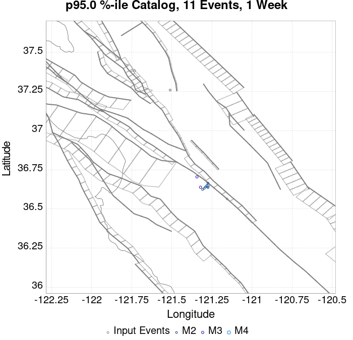 |  |  |  |  |  | 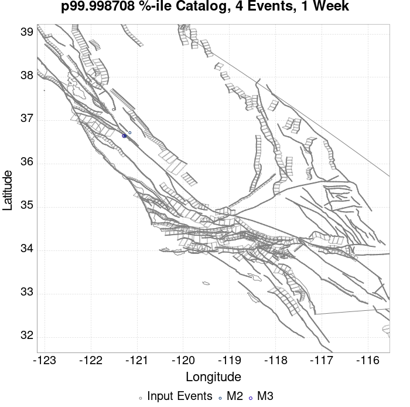 |
| 1 Month |  | 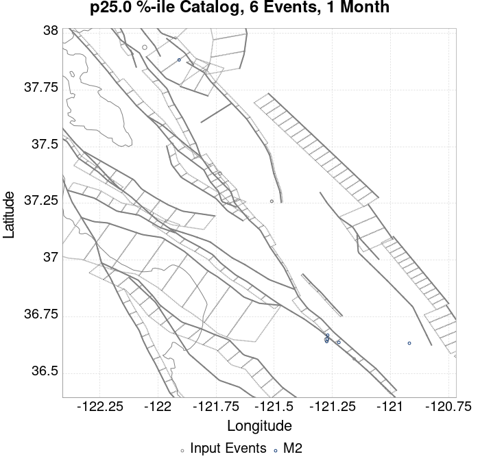 |  |  |  |  |  |  |  |  |  | |
| 1 Year |  |  |  |  |  |  |  | 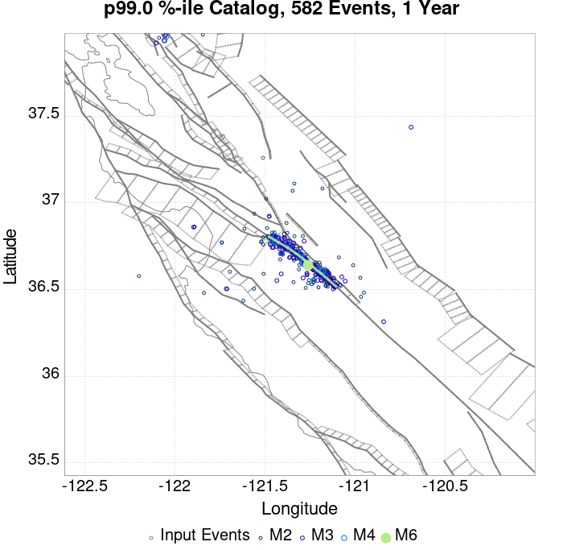 |  |  | ||
| 10 Year |  |  |  |  |  |  | 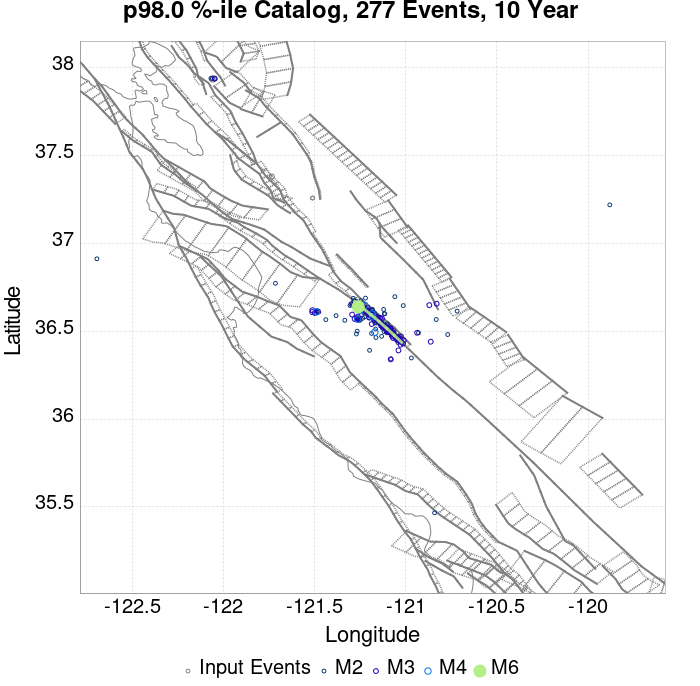 |  |  |  |
These plots compare simulated sequences with data from ComCat. All plots only consider events with hypocenters inside the ComCat region defined in the JSON input file.
Last updated at 2019/10/16 01:33:43 UTC, 5.9 hr after the simulation start time
| Incremental MND | Cumulative MND |
|---|---|
 |  |
The following plots compare simulation results with ComCat data above a magnitude threshold. Plots labeled as M≥Mc(t) use the time-dependent magnitude of completeness (Mc) defined in Helmstetter et al. (2006), which is plotted below. In the case of multiple M≥5 ruptures, either as input to the simulation or in the comparison data, the maximum calculated time-dependent Mc is used. This time-dependent Mc function is plotted below.

| M≥Mc(t) | M≥3.1 | M≥4 | M≥4.5 | M≥5 |
|---|---|---|---|---|
 |  | 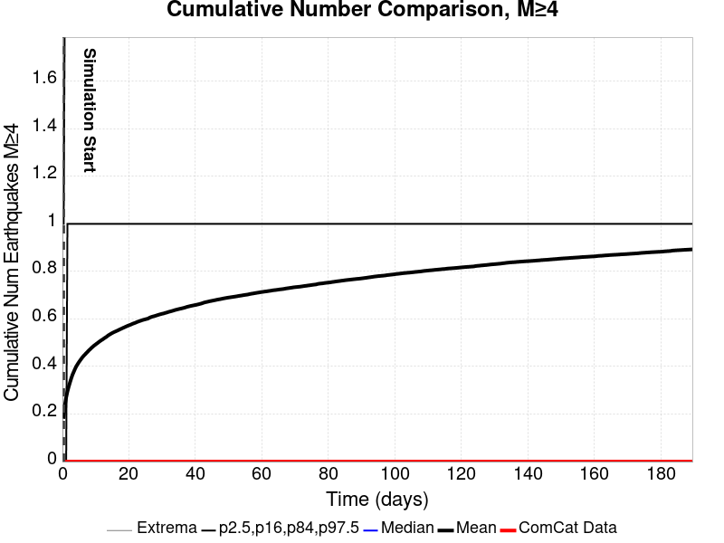 |  |  |

| Current (5.9 Hour) | |
|---|---|
| M≥Mc(t) |  |
| M≥3.1 |  |
| M≥4 |  |
| M≥4.5 | 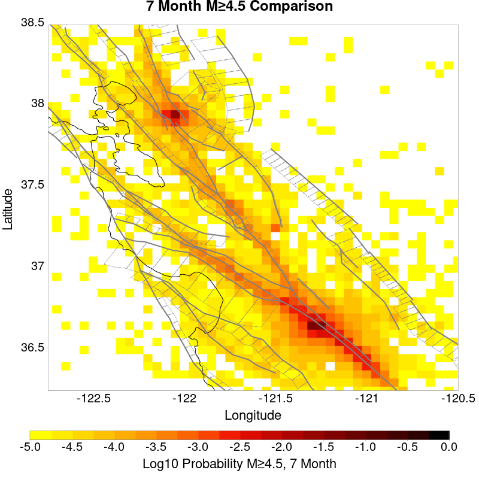 |
| M≥5 |  |
| M≥5.5 | 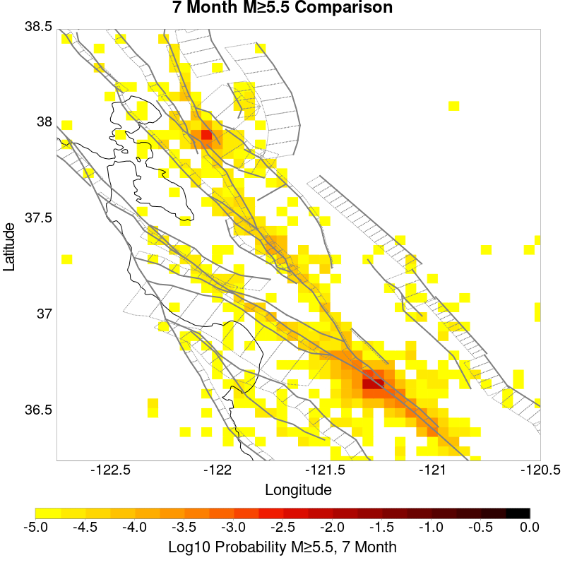 |
| Current (5.9 Hour) | |
|---|---|
| M≥Mc(t) |  |
| M≥3.1 |  |
| M≥4 |  |
| M≥4.5 |  |
| M≥5 |  |
| M≥5.5 |  |
| M≥Mc(t) | M≥3.1 | M≥4 | M≥4.5 | M≥5 | M≥5.5 |
|---|---|---|---|---|---|
 |  |  |  |  | 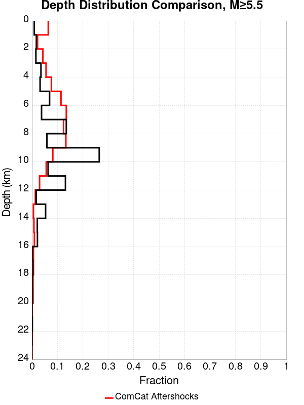 |
| Min Mag | 1 yr Triggered Ruptures (no spontaneous) | 10 yr Triggered Ruptures (no spontaneous) | 10 yr Triggered Ruptures (primary aftershocks only) |
|---|---|---|---|
| All Supra. Seis. |  |  |  |
| M≥6.5 |  |  |  |
| M≥7 |  |  |  |
| M≥7.5 |  |  | |
| M≥8 |  | 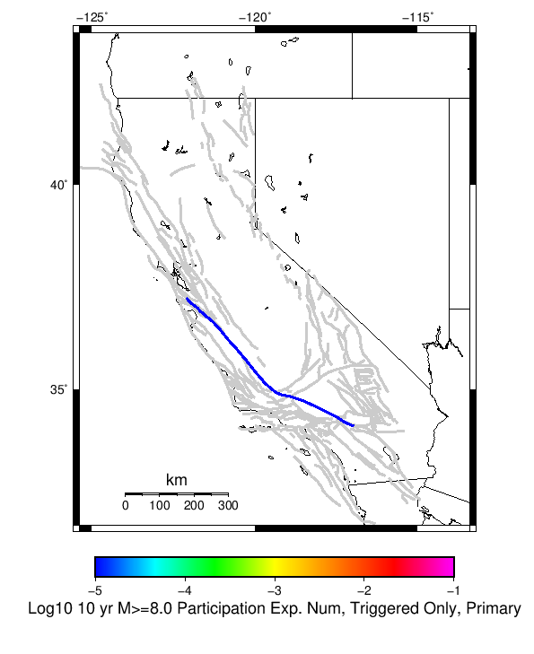 |
First 10 of 76 with matching ruptures shown
| Parent Name | Triggered 10 Year Mean Count | Triggered 1 Day Prob | Triggered 1 Week Prob | Triggered 1 Month Prob | Triggered 1 Year Prob | Triggered 10 Year Prob | Triggered 10 Year Primary Mean Count |
|---|---|---|---|---|---|---|---|
| San Andreas (Creeping Section) 2011 CFM | 0.017183462 | 0.005904393 | 0.008307493 | 0.0102325585 | 0.013010336 | 0.015490956 | 0.009534883 |
| Calaveras (So) - Paicines extension 2011 CFM | 0.0047028423 | 0.0015245478 | 0.0021576227 | 0.0025968992 | 0.0035658914 | 0.004366925 | 0.002235142 |
| Calaveras (So) 2011 CFM | 0.0017700258 | 5.1679584E-4 | 8.268734E-4 | 0.0010335917 | 0.0014341085 | 0.0017571059 | 7.105943E-4 |
| Concord 2011 CFM | 0.0014211886 | 1.2919896E-4 | 3.875969E-4 | 6.072351E-4 | 0.0010335917 | 0.0014082687 | 8.010336E-4 |
| Green Valley 2011 CFM | 0.0013307494 | 1.1627907E-4 | 3.359173E-4 | 5.1679584E-4 | 8.9147285E-4 | 0.00125323 | 7.2351424E-4 |
| San Andreas (Santa Cruz Mts) 2011 CFM | 0.0012273901 | 4.7803618E-4 | 6.4599485E-4 | 7.105943E-4 | 0.0010206718 | 0.0012273901 | 6.072351E-4 |
| Calaveras (Central) 2011 CFM | 0.0011757106 | 2.8423773E-4 | 4.9095607E-4 | 6.20155E-4 | 8.7855296E-4 | 0.0010852714 | 4.5219637E-4 |
| Hayward (So) 2011 CFM | 5.5555557E-4 | 3.875969E-5 | 1.03359176E-4 | 1.5503875E-4 | 2.8423773E-4 | 4.7803618E-4 | 7.751938E-5 |
| Hayward (So) extension 2011 CFM | 4.7803618E-4 | 5.1679588E-5 | 9.043928E-5 | 1.5503875E-4 | 3.359173E-4 | 4.263566E-4 | 6.459948E-5 |
| Calaveras (No) 2011 CFM | 3.74677E-4 | 9.043928E-5 | 1.2919896E-4 | 1.8087856E-4 | 2.8423773E-4 | 3.74677E-4 | 1.6795866E-4 |
First 10 of 64 with matching ruptures shown
| Parent Name | Triggered 10 Year Mean Count | Triggered 1 Day Prob | Triggered 1 Week Prob | Triggered 1 Month Prob | Triggered 1 Year Prob | Triggered 10 Year Prob | Triggered 10 Year Primary Mean Count |
|---|---|---|---|---|---|---|---|
| San Andreas (Creeping Section) 2011 CFM | 0.0044444446 | 0.0014341085 | 0.002235142 | 0.0026614987 | 0.0035271319 | 0.004224806 | 0.0021834625 |
| Calaveras (So) - Paicines extension 2011 CFM | 0.0024160207 | 7.49354E-4 | 0.001124031 | 0.0014082687 | 0.001873385 | 0.0022868216 | 0.0010594316 |
| Calaveras (So) 2011 CFM | 0.0015891473 | 5.0387596E-4 | 7.622739E-4 | 9.5607236E-4 | 0.0012919897 | 0.0015891473 | 6.847545E-4 |
| San Andreas (Santa Cruz Mts) 2011 CFM | 0.0012015504 | 4.7803618E-4 | 6.3307496E-4 | 6.976744E-4 | 0.0010077519 | 0.0012015504 | 6.072351E-4 |
| Calaveras (Central) 2011 CFM | 0.0010594316 | 2.8423773E-4 | 4.7803618E-4 | 5.9431524E-4 | 8.010336E-4 | 9.819121E-4 | 4.134367E-4 |
| Hayward (So) 2011 CFM | 5.0387596E-4 | 3.875969E-5 | 9.043928E-5 | 1.4211886E-4 | 2.4547803E-4 | 4.5219637E-4 | 7.751938E-5 |
| Green Valley 2011 CFM | 4.7803618E-4 | 5.1679588E-5 | 1.03359176E-4 | 1.4211886E-4 | 3.100775E-4 | 4.7803618E-4 | 2.3255814E-4 |
| Concord 2011 CFM | 4.263566E-4 | 5.1679588E-5 | 9.043928E-5 | 1.2919896E-4 | 2.7131784E-4 | 4.263566E-4 | 2.3255814E-4 |
| Calaveras (No) 2011 CFM | 3.74677E-4 | 9.043928E-5 | 1.2919896E-4 | 1.8087856E-4 | 2.8423773E-4 | 3.74677E-4 | 1.6795866E-4 |
| Hayward (So) extension 2011 CFM | 1.9379845E-4 | 0.0 | 2.5839794E-5 | 3.875969E-5 | 1.1627907E-4 | 1.9379845E-4 | 2.5839794E-5 |
First 10 of 53 with matching ruptures shown
| Parent Name | Triggered 10 Year Mean Count | Triggered 1 Day Prob | Triggered 1 Week Prob | Triggered 1 Month Prob | Triggered 1 Year Prob | Triggered 10 Year Prob | Triggered 10 Year Primary Mean Count |
|---|---|---|---|---|---|---|---|
| San Andreas (Creeping Section) 2011 CFM | 0.0014082687 | 5.297158E-4 | 7.105943E-4 | 8.010336E-4 | 0.0011757106 | 0.0013953488 | 6.847545E-4 |
| San Andreas (Santa Cruz Mts) 2011 CFM | 0.0011886305 | 4.7803618E-4 | 6.3307496E-4 | 6.847545E-4 | 9.94832E-4 | 0.0011886305 | 5.9431524E-4 |
| Calaveras (So) - Paicines extension 2011 CFM | 7.105943E-4 | 2.0671835E-4 | 3.2299742E-4 | 3.875969E-4 | 5.426357E-4 | 6.718346E-4 | 2.3255814E-4 |
| Calaveras (Central) 2011 CFM | 5.5555557E-4 | 1.2919896E-4 | 2.1963824E-4 | 2.9715762E-4 | 4.263566E-4 | 5.5555557E-4 | 1.6795866E-4 |
| Calaveras (So) 2011 CFM | 5.297158E-4 | 1.2919896E-4 | 2.3255814E-4 | 2.9715762E-4 | 4.134367E-4 | 5.297158E-4 | 1.5503875E-4 |
| Calaveras (No) 2011 CFM | 2.8423773E-4 | 9.043928E-5 | 1.2919896E-4 | 1.5503875E-4 | 2.0671835E-4 | 2.8423773E-4 | 1.1627907E-4 |
| Hayward (So) 2011 CFM | 1.8087856E-4 | 2.5839794E-5 | 6.459948E-5 | 7.751938E-5 | 1.1627907E-4 | 1.8087856E-4 | 3.875969E-5 |
| Hayward (No) 2011 CFM | 1.2919896E-4 | 1.2919897E-5 | 5.1679588E-5 | 5.1679588E-5 | 7.751938E-5 | 1.2919896E-4 | 2.5839794E-5 |
| San Andreas (Parkfield) | 1.2919896E-4 | 5.1679588E-5 | 6.459948E-5 | 6.459948E-5 | 1.03359176E-4 | 1.2919896E-4 | 1.03359176E-4 |
| San Andreas (Peninsula) 2011 CFM | 1.2919896E-4 | 2.5839794E-5 | 3.875969E-5 | 5.1679588E-5 | 1.03359176E-4 | 1.2919896E-4 | 9.043928E-5 |
First 10 of 40 with matching ruptures shown
| Parent Name | Triggered 10 Year Mean Count | Triggered 1 Day Prob | Triggered 1 Week Prob | Triggered 1 Month Prob | Triggered 1 Year Prob | Triggered 10 Year Prob | Triggered 10 Year Primary Mean Count |
|---|---|---|---|---|---|---|---|
| San Andreas (Creeping Section) 2011 CFM | 1.6795866E-4 | 2.5839794E-5 | 5.1679588E-5 | 6.459948E-5 | 1.4211886E-4 | 1.6795866E-4 | 1.03359176E-4 |
| San Andreas (Santa Cruz Mts) 2011 CFM | 1.4211886E-4 | 2.5839794E-5 | 3.875969E-5 | 5.1679588E-5 | 1.1627907E-4 | 1.4211886E-4 | 9.043928E-5 |
| San Andreas (Peninsula) 2011 CFM | 1.2919896E-4 | 2.5839794E-5 | 3.875969E-5 | 5.1679588E-5 | 1.03359176E-4 | 1.2919896E-4 | 9.043928E-5 |
| Calaveras (So) - Paicines extension 2011 CFM | 6.459948E-5 | 0.0 | 2.5839794E-5 | 2.5839794E-5 | 3.875969E-5 | 6.459948E-5 | 1.2919897E-5 |
| San Andreas (Big Bend) | 6.459948E-5 | 1.2919897E-5 | 1.2919897E-5 | 1.2919897E-5 | 5.1679588E-5 | 6.459948E-5 | 3.875969E-5 |
| San Andreas (Carrizo) rev | 6.459948E-5 | 1.2919897E-5 | 1.2919897E-5 | 1.2919897E-5 | 5.1679588E-5 | 6.459948E-5 | 3.875969E-5 |
| San Andreas (Cholame) rev | 6.459948E-5 | 1.2919897E-5 | 1.2919897E-5 | 1.2919897E-5 | 5.1679588E-5 | 6.459948E-5 | 3.875969E-5 |
| San Andreas (Mojave N) | 6.459948E-5 | 1.2919897E-5 | 1.2919897E-5 | 1.2919897E-5 | 5.1679588E-5 | 6.459948E-5 | 3.875969E-5 |
| San Andreas (Parkfield) | 6.459948E-5 | 1.2919897E-5 | 1.2919897E-5 | 1.2919897E-5 | 5.1679588E-5 | 6.459948E-5 | 3.875969E-5 |
| Calaveras (Central) 2011 CFM | 5.1679588E-5 | 0.0 | 2.5839794E-5 | 2.5839794E-5 | 3.875969E-5 | 5.1679588E-5 | 0.0 |
First 10 of 23 with matching ruptures shown
| Parent Name | Triggered 10 Year Mean Count | Triggered 1 Day Prob | Triggered 1 Week Prob | Triggered 1 Month Prob | Triggered 1 Year Prob | Triggered 10 Year Prob | Triggered 10 Year Primary Mean Count |
|---|---|---|---|---|---|---|---|
| San Andreas (Big Bend) | 3.875969E-5 | 0.0 | 0.0 | 0.0 | 2.5839794E-5 | 3.875969E-5 | 1.2919897E-5 |
| San Andreas (Carrizo) rev | 3.875969E-5 | 0.0 | 0.0 | 0.0 | 2.5839794E-5 | 3.875969E-5 | 1.2919897E-5 |
| San Andreas (Cholame) rev | 3.875969E-5 | 0.0 | 0.0 | 0.0 | 2.5839794E-5 | 3.875969E-5 | 1.2919897E-5 |
| San Andreas (Creeping Section) 2011 CFM | 3.875969E-5 | 0.0 | 0.0 | 0.0 | 2.5839794E-5 | 3.875969E-5 | 1.2919897E-5 |
| San Andreas (Mojave N) | 3.875969E-5 | 0.0 | 0.0 | 0.0 | 2.5839794E-5 | 3.875969E-5 | 1.2919897E-5 |
| San Andreas (Mojave S) | 3.875969E-5 | 0.0 | 0.0 | 0.0 | 2.5839794E-5 | 3.875969E-5 | 1.2919897E-5 |
| San Andreas (Parkfield) | 3.875969E-5 | 0.0 | 0.0 | 0.0 | 2.5839794E-5 | 3.875969E-5 | 1.2919897E-5 |
| San Andreas (San Bernardino N) | 3.875969E-5 | 0.0 | 0.0 | 0.0 | 2.5839794E-5 | 3.875969E-5 | 1.2919897E-5 |
| San Andreas (Santa Cruz Mts) 2011 CFM | 3.875969E-5 | 0.0 | 0.0 | 0.0 | 2.5839794E-5 | 3.875969E-5 | 1.2919897E-5 |
| San Andreas (Peninsula) 2011 CFM | 2.5839794E-5 | 0.0 | 0.0 | 0.0 | 1.2919897E-5 | 2.5839794E-5 | 1.2919897E-5 |
The first 5 sections (sorted by trigger rate) are plotted below. All fault MPDs are available here
| 1 Week | 1 Month | 1 Year | 10 Year |
|---|---|---|---|
 |  |  |  |
 |  |  |  |
 |  |  |  |
| 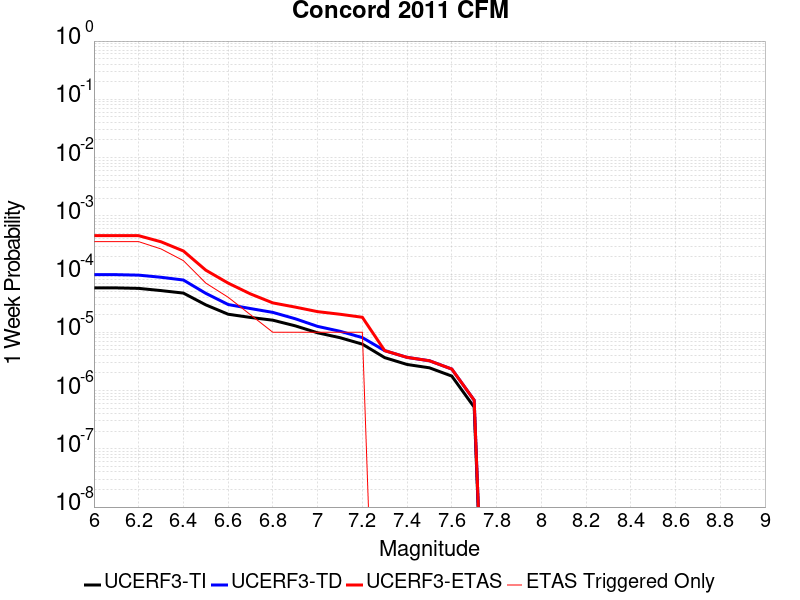 |  |  | |
 |  |  |  |
| Min Mag | Triggered Ruptures (no spontaneous) | Triggered Ruptures (primary aftershocks only) |
|---|---|---|
| M≥2.5 |  |  |
| M≥5 |  |  |
| M≥6 |  | |
| M≥7 |  |  |
{
"numSimulations": 100000,
"duration": 10.0,
"startTimeMillis": 1571168551550,
"includeSpontaneous": false,
"randomSeed": 1571173106462,
"binaryOutput": true,
"binaryOutputFilters": [
{
"prefix": "results_complete",
"descendantsOnly": false
},
{
"prefix": "results_m5_preserve_chain",
"minMag": 5.0,
"preserveChainBelowMag": true,
"descendantsOnly": false
}
],
"forceRecalc": false,
"simulationName": "ComCat M4.71 (nc73292360), Point Sources",
"numRetries": 3,
"outputDir": "${ETAS_SIM_DIR}/2019_10_15-ComCatM4p71_nc73292360_PointSources",
"triggerRuptures": [
{
"occurrenceTimeMillis": 1570612516640,
"comcatEventID": "nc73289220",
"mag": 3.25,
"latitude": 37.3818333,
"longitude": -121.73283330000001,
"depth": 9.27
},
{
"occurrenceTimeMillis": 1571009527260,
"comcatEventID": "nc73291290",
"mag": 2.87,
"latitude": 37.2589989,
"longitude": -121.51066590000002,
"depth": 7.8
},
{
"occurrenceTimeMillis": 1571016328610,
"comcatEventID": "nc73291345",
"mag": 2.56,
"latitude": 37.2593346,
"longitude": -121.50966639999999,
"depth": 7.97
},
{
"occurrenceTimeMillis": 1571117622810,
"comcatEventID": "nc73291880",
"mag": 4.46,
"latitude": 37.938,
"longitude": -122.05700000000002,
"depth": 13.97
},
{
"occurrenceTimeMillis": 1571134783260,
"comcatEventID": "nc73292185",
"mag": 2.68,
"latitude": 36.5639992,
"longitude": -121.1555023,
"depth": 2.69
},
{
"occurrenceTimeMillis": 1571168550550,
"comcatEventID": "nc73292360",
"mag": 4.71,
"latitude": 36.649334,
"longitude": -121.2740021,
"depth": 9.72
}
],
"cacheDir": "${ETAS_LAUNCHER}/inputs/cache_fm3p1_ba",
"fssFile": "${ETAS_LAUNCHER}/inputs/2013_05_10-ucerf3p3-production-10runs_COMPOUND_SOL_FM3_1_SpatSeisU3_MEAN_BRANCH_AVG_SOL.zip",
"probModel": "FULL_TD",
"applySubSeisForSupraNucl": true,
"totRateScaleFactor": 1.14,
"gridSeisCorr": true,
"timeIndependentERF": false,
"griddedOnly": false,
"imposeGR": false,
"includeIndirectTriggering": true,
"gridSeisDiscr": 0.1,
"catalogCompletenessModel": "RELAXED",
"configCommand": "u3etas_comcat_event_config_builder.sh --event-id nc73292360 --region 38.5,-122.75,36.25,-120.5 --num-simulations 100000 --days-before 7 --hpc-site USC_HPC --nodes 36 --hours 24 --queue scec",
"configTime": 1571173106462,
"comcatMetadata": {
"region": {
"minLatitude": 36.249999999999,
"maxLatitude": 38.500000000001,
"minLongitude": -122.750000000001,
"maxLongitude": -120.49999999999902
},
"eventID": "nc73292360",
"minDepth": -10.0,
"maxDepth": 24.0,
"minMag": 2.5,
"startTime": 1570563750550,
"endTime": 1571168550551
}
}